Bem-vind@s à workshop Mergulhando na pygeoapi!
Versão: 1.6.0

A pygeoapi é uma implementação em Python de um servidor da suíte de standards OGC API. O projeto surgiu como parte dos esforços da próxima geração da OGC API em 2018 e oferece a capacidade de as organizações implementarem um ponto de acesso (endpoint) RESTful OGC API usando OpenAPI, GeoJSON e HTML. A pygeoapi é de código aberto e disponibilizada sob a licença MIT.
A Mergulhando na pygeoapi é uma workshop de meio dia, desenhada para que os utilizadores se familiarizem com a instalação, configuração, publicação de dados e extensão da pygeoapi. Esta workshop abordará a publicação de dados geoespaciais na Web usando a pygeoapi, em conformidade com a suíte de standards OGC API.
Esta workshop abrange uma vasta gama de tópicos (instalação/configuração, publicação, cloud, modelos, plugins, etc.). Por favor, consulte o menu de navegação à esquerda para aceder ao índice.
A vossa equipa da workshop da FSL
 |
 |
 |
 |
Sobre este tutorial
Este tutorial é uma combinação de explicações passo a passo de vários aspetos da pygeoapi, bem como uma série de exercícios para se familiarizar com o projeto.
Os exercícios são indicados da seguinte forma:
Exemplo de exercício
Uma secção marcada desta forma indica que pode experimentar o exercício.
Exemplo de exercício com separadores
Uma secção marcada desta forma indica que pode experimentar o exercício e escolher o seu ambiente (Linux/Mac ou Windows).
docker run -p 5000:80 -v $(pwd)/default.config.yml:/pygeoapi/local.config.yml geopython/pygeoapi:latest
docker run -p 5000:80 -v ${pwd}/default.config.yml:/pygeoapi/local.config.yml geopython/pygeoapi:latest
Também irá notar secções de dicas e notas no texto:
Tip
As dicas oferecem ajuda adicional sobre a melhor forma de realizar tarefas
Os exemplos são indicados da seguinte forma:
Código
1 2 3 4 5 | |
Configuração
1 2 3 4 | |
Fragmentos de código (snippets) que precisam de ser digitados num terminal/consola são indicados como:
echo 'Hello world'
Localização e materiais da workshop
Esta workshop é sempre disponibilizada ao vivo em https://dive.pygeoapi.io.
Os conteúdos da workshop, a wiki e o sistema de registo de problemas (issue tracker) são geridos no GitHub em https://github.com/geopython/diving-into-pygeoapi.
Imprimir esta workshop
Para imprimir esta workshop, navegue até à página de impressão e selecione Ficheiro > Imprimir > Guardar como PDF.
Suporte
Existe um canal no Gitter para discussão e suporte ao vivo por parte dos desenvolvedores da workshop e de outros participantes.
Para problemas/bugs/sugestões ou melhorias/contribuições, por favor, utilize o issue tracker do GitHub.
Todos os bugs, melhorias e problemas podem ser reportados no GitHub.
Como sempre, o suporte principal da pygeoapi e as informações da comunidade podem ser encontrados no website da pygeoapi.
As contribuições são sempre incentivadas e bem-vindas!
Agora, vamos à workshop. Bora lá!
Introdução à pygeoapi
A equipa de desenvolvimento da pygeoapi (sim, em minúsculas) tem o prazer de lhe dar as boas-vindas a esta workshop!
Nesta workshop de meio dia1, fazemos uma introdução à pygeoapi, e à publicação de dados geoespaciais, fornecendo também recursos e dicas para leitura e referência futuras (ou seja, para onde ir quando não souber!).
Embora a pygeoapi seja escrita em Python e seja personalizável e extensível (através de plugins) por programadores de Python, não são necessários conhecimentos de Python para instalar, configurar e publicar os seus dados geoespaciais como parte desta workshop. Tudo o que precisa para a workshop é o seu editor de texto favorito e o Docker (forneceremos mais informações na secção de configuração).
Leitura de base
O website da pygeoapi é o ponto de entrada principal para utilizadores finais e programadores. Aí pode encontrar:
- Documentação oficial
- Várias apresentações do projeto
- P código-fonte no GitHub
- As imagens Docker disponíveis no Docker Hub
- As versões da pygeoapi no Python Package Index (PyPI)
- Dado que a pygeoapi implementa uma série de normas OGC API, também poderá querer ler sobre estas em ogcapi.ogc.org.
Instalações de referência
Várias organizações implementaram a pygeoapi nas suas operações. Para ter uma ideia de como a pygeoapi é usada na prática, consulte a nossa página atualizada de implementações ativas.
O projeto pygeoapi também mantém uma instalação de demonstração, disponível em:
Esta instalação é operada pela equipa de desenvolvimento. Consulte a instância principal, que executa sempre a versão mais recente do GitHub.
Interessado na configuração do próprio site de demonstração? O demo.pygeoapi.io é desenvolvido num repositório GitHub utilizando um fluxo de trabalho de disponibilização contínua (CD). Implementações GitOps ainda mais recentes foram desenvolvidas para a Geonovum e para o Centro Comum de Investigação da Comissão Europeia.
Os exemplos acima podem servir como ponto de partida para a sua própria configuração e implementação da pygeoapi, por isso, sinta-se à vontade para os estudar e utilizar!
História
Iniciada em 2018, a pygeoapi surgiu como parte dos esforços iniciais para o desenvolvimento das normas OGC API. As code sprints da OGC API foram fundamentais para o desenvolvimento ágil e para lançar as bases do projeto.
Os princípios centrais de design são os seguintes:
- Simplicidade / baixa barreira de entrada
- Sustentabilidade a longo prazo
- Modularidade
- Extensibilidade
- Construção sobre um vasto ecossistema de componentes de Código Aberto e da OSGeo, como GDAL, rasterio, Shapely, Pandas, Elasticsearch, PostGIS e muitos outros
O projeto foi iniciado por Tom Kralidis. Em poucas semanas, vários programadores talentosos juntaram-se ao projeto, o que levou à formação de uma equipa principal e de um Comité de Direção do Projeto (PSC). As contribuições continuaram também por parte de outros programadores e utilizadores que, de bom grado, forneceram novas funcionalidades, correções de erros e atualizações da documentação. Como resultado, rapidamente emergiu uma comunidade saudável com um interesse comum em código aberto, normas OGC API, baixa barreira de entrada, modularidade e extensibilidade. O resto, como se costuma dizer, é história.
Em Fevereiro de 2024 foi realizado o primeiro encontro de desenvolvedores da pygeoapi, em Évora
A pygeoapi é um Projeto da OSGeo e uma Implementação de Referência da OGC.
Configuração do ambiente da workshop
Nesta workshop, utilizamos os seguintes materiais:
- Documentação - (como esta página): aceda à versão mais recente em dive.pygeoapi.io
- Exercícios - descarregue o ficheiro zip mais recente, extraia o conteúdo e encontre os exercícios em
workshop/exercises1 - Docker - todos os exemplos/exercícios são executados num
contentor Dockeremworkshop/exercises
Editor de Texto
O seu editor de texto deve ser capaz de editar ficheiros de configuração em texto simples. Abaixo estão algumas opções de editores de texto (pode haver outros), juntamente com o que alguns dos programadores da pygeoapi preferem usar:
- Notepad ou Notepad++ (Windows)
- Sublime Text: Angelos
- PyCharm: Just
- Emacs: Just
- Visual Studio Code: Francesco, Angelos, Joana
vi/vim: Tom, Angelos
Dito isto, sinta-se à vontade para usar o que funciona melhor para si :)
YAML
A maioria dos exercícios focar-se-á na edição da configuração da pygeoapi, que está no formato YAML. Se não estiver familiarizado com YAML, vale a pena ler um tutorial para se familiarizar com a sintaxe e a indentação do YAML.
O requisito principal para a formação é instalar o Docker e/ou o Docker Compose no seu sistema. Aconselhamos vivamente a instalação do Docker antes do início da workshop.
Embora sejam possíveis vários cenários de instalação personalizada (consulte a documentação para mais informações), estes não são considerados nesta workshop, dada a capacidade de instalar um ambiente totalmente reprodutível através do Docker e do Docker Compose.
Os Exercícios da Workshop também serão baseados no Docker, pelo que uma instalação personalizada seria, no mínimo, 'desafiadora'. A boa notícia é que apenas uma única instalação (Docker) é necessária! As imagens Docker utilizadas nesta workshop contêm a versão mais recente da pygeoapi e todas as suas dependências e serviços externos (ex: PostGIS).
Sobre o Docker
O Docker está disponível desde 2013 e é fornecido como uma opção de implementação em inúmeros projetos de software FOSS e da OSGeo. Dada a era atual da computação, é provável que já tenha ouvido falar do Docker e de contentorização. Ou, talvez, já esteja familiarizado e, esperamos, já a utilizar o Docker. Se não for o caso, existe uma abundância de materiais introdutórios que podem ser encontrados online, como este tutorial da IBM.
O software FOSS4G beneficiou enormemente do Docker (padrões consistentes de empacotamento, isolamento, integração e atualização) em comparação com as instalações personalizadas. Embora hoje utilizemos principalmente o Docker, a visão geral é o uso de Contentores como o próximo passo na virtualização. A contentorização certamente merece uma workshop própria, portanto, para os fins desta workshop, abordaremos apenas os conceitos básicos do Docker e do Docker Compose.
O Docker Compose é um complemento do Docker para facilitar a orquestração (configuração) de um ou mais 'Contentores' Docker (um Contentor é uma instância em execução de uma imagem Docker) usando uma convenção de configuração (o ficheiro YAML do Docker Compose), geralmente chamado docker-compose.yml.
Num patamar superior, existem orquestradores Docker ainda mais sofisticados, como o Rancher e o Kubernetes, mas para esta workshop, o Docker e o Docker Compose são tudo o que precisamos.
Instalação
A instalação do Docker progrediu muito ao longo dos anos. Esta é a única parte da workshop que depende do sistema/SO que está a utilizar (ex: Windows, Mac ou Linux). Para cada sistema, o site do Docker fornece instruções de instalação detalhadas. Por favor, siga-as de forma consistente.
Para muitas plataformas, está disponível um produto chamado Docker Desktop, que inclui os principais componentes do Docker:
Algumas notas:
- No Windows, recomendamos o uso do Subsistema Windows para Linux (WSL), pois também fornece uma linha de comandos poderosa (Bash) e tem uma integração ótima com o Docker. Antes de instalar o Docker Desktop, instale o WSL abrindo o Microsoft PowerShell (executar como administrador) e executando
wsl --install- a instalação do WSL requer privilégios de administrador no seu sistema
- No Mac, se estiver a usar o Homebrew, considere (como o autor fez) usar a fórmula Docker do brew
- No Mac OSX Monterey e posterior, pode haver um problema com a porta local 5000 já em uso, entrando em conflito com a porta padrão usada pelo contentor da pygeoapi. Se vir este erro
OSError: [Errno 48] Address already in use, precisa de desativar o Recetor Airplay. Vá aDefinições do Sistema | Partilhaou, como no Sonoma, escreva 'airplay' na caixa de pesquisa. Veja a imagem abaixo para o Mac OSX Sonoma. Há também uma descrição detalhada nesta publicação de blog.
- No Linux, pode escolher o instalador relevante para a sua plataforma. Pode também usar o Virtualbox com uma Imagem Ubuntu ou usar uma VM na nuvem.
- No Linux, ao encontrar problemas de permissão: o daemon do Docker normalmente é executado como "root". Isto requer que os comandos sejam prefixados com
sudocomo um utilizador não-root. Na maioria das distribuições, o Docker é acessível por utilizadores no grupodocker. Pode omitir o uso desudoe prevenir outros possíveis problemas de permissão da seguinte forma:- Teste se o grupo
dockerexiste:cat /etc/group | grep docker. - Se não existir:
sudo groupadd docker. - Adicione o seu utilizador a este grupo:
sudo usermod -aG docker $USER - Faça log-out e log-in.
- Veja todos os detalhes e mais opções nesta instrução.
- Teste se o grupo
- O Docker Desktop inclui uma interface gráfica com algumas opções interessantes. Pode ver logs e informações sobre os contentores em execução, abrir o serviço deles num navegador ou até mesmo abrir um terminal dentro do contentor.
Se tudo correr bem, deverá conseguir executar o Docker a partir da linha de comandos da seguinte forma: 2
docker version
Docker version 20.10.17, build 100c701
docker compose version
Docker Compose version v2.6.1
docker version
Docker version 20.10.17, build 100c701
docker compose version
Docker Compose version v2.6.1
(Não é necessário que os números da sua versão correspondam exatamente).
Início Rápido
Assim que o Docker estiver disponível no seu sistema, executar o contentor da pygeoapi com a sua configuração e dados incorporados é uma única linha de comando.
Abra uma sessão de terminal e execute:
Primeira execução via Docker
docker run --rm -p 5000:80 geopython/pygeoapi:latest
Unable to find image 'geopython/pygeoapi:latest' locally
latest: Pulling from geopython/pygeoapi
d7bfe07ed847: Already exists
d5d0144a7164: Already exists
afe0923a0fa0: Already exists
75f8618c4e86: Already exists
c603397fd6ad: Already exists
6584a95328b3: Already exists
fd93e44631d9: Already exists
6a3201071a5d: Already exists
4f4fb700ef54: Already exists
Digest: sha256:27b2b219497a6ea382a946ee90ae96ad00b5c1d8e9b725fccf23211978fef124
Status: Downloaded newer image for geopython/pygeoapi:latest
START /entrypoint.sh
Trying to generate openapi.yml
openapi.yml generated continue to pygeoapi
make SCRIPT_NAME empty from /
Start gunicorn name=pygeoapi on 0.0.0.0:80 with 4 workers and SCRIPT_NAME=
[2022-08-09 12:59:00 +0000] [1] [INFO] Starting gunicorn 20.0.4
[2022-08-09 12:59:00 +0000] [1] [INFO] Listening at: http://0.0.0.0:80 (1)
[2022-08-09 12:59:00 +0000] [1] [INFO] Using worker: gevent
[2022-08-09 12:59:00 +0000] [18] [INFO] Booting worker with pid: 18
[2022-08-09 12:59:00 +0000] [19] [INFO] Booting worker with pid: 19
[2022-08-09 12:59:00 +0000] [21] [INFO] Booting worker with pid: 21
[2022-08-09 12:59:00 +0000] [22] [INFO] Booting worker with pid: 22
docker run --rm -p 5000:80 geopython/pygeoapi:latest
Unable to find image 'geopython/pygeoapi:latest' locally
latest: Pulling from geopython/pygeoapi
d7bfe07ed847: Already exists
d5d0144a7164: Already exists
afe0923a0fa0: Already exists
75f8618c4e86: Already exists
c603397fd6ad: Already exists
6584a95328b3: Already exists
fd93e44631d9: Already exists
6a3201071a5d: Already exists
4f4fb700ef54: Already exists
Digest: sha256:27b2b219497a6ea382a946ee90ae96ad00b5c1d8e9b725fccf23211978fef124
Status: Downloaded newer image for geopython/pygeoapi:latest
START /entrypoint.sh
Trying to generate openapi.yml
openapi.yml generated continue to pygeoapi
make SCRIPT_NAME empty from /
Start gunicorn name=pygeoapi on 0.0.0.0:80 with 4 workers and SCRIPT_NAME=
[2022-08-09 12:59:00 +0000] [1] [INFO] Starting gunicorn 20.0.4
[2022-08-09 12:59:00 +0000] [1] [INFO] Listening at: http://0.0.0.0:80 (1)
[2022-08-09 12:59:00 +0000] [1] [INFO] Using worker: gevent
[2022-08-09 12:59:00 +0000] [18] [INFO] Booting worker with pid: 18
[2022-08-09 12:59:00 +0000] [19] [INFO] Booting worker with pid: 19
[2022-08-09 12:59:00 +0000] [21] [INFO] Booting worker with pid: 21
[2022-08-09 12:59:00 +0000] [22] [INFO] Booting worker with pid: 22
É tudo! Abra o seu navegador e navegue para http://localhost:5000, a página da pygeoapi será exibida.
Como parte da execução inicial do docker run, o Docker descarregará a Imagem Docker da pygeoapi do Docker Hub.
Isto pode levar algum tempo, pois a imagem Docker inclui todas as dependências (como GDAL, etc.). Seja paciente! Este é um download único para toda a workshop, ou pode querer fazê-lo antecipadamente.
Algumas notas:
- O Docker executa um contentor da pygeoapi no seu sistema local na porta 5000, que é mapeada para a porta 80 dentro do contentor.
- o contentor Docker da pygeoapi é executado com a configuração padrão e os dados do repositório GitHub.
- tanto a configuração como os dados (do repositório GitHub) estão incorporados na Imagem Docker - iremos substituí-los mais tarde.
- a opção
--rmremove o Contentor Docker (mas não a imagem), após a execução. - pressione
CTRL-Cpara parar o contentor e voltar ao terminal.
De seguida, pode substituir a configuração padrão e adicionar os seus próprios dados usando volumes Docker.
Personalizar a configuração
Nos próximos exercícios, vamos atualizar o ficheiro de configuração várias vezes.
Para facilitar o desenvolvimento, vamos substituir a configuração da pygeoapi que reside por padrão em /pygeoapi/local.config.yml dentro do contentor por um ficheiro local que pode editar no seu editor de texto favorito.
Substituir o ficheiro de configuração da pygeoapi
Descarregue a configuração Docker padrão da pygeoapi de default.config.yml para a pasta atual (ou navegue para a pasta onde descarregou o ficheiro), por exemplo com:
curl -O https://raw.githubusercontent.com/geopython/pygeoapi/master/docker/default.config.yml
curl https://raw.githubusercontent.com/geopython/pygeoapi/master/docker/default.config.yml
Abra o ficheiro no seu editor de texto favorito e altere o título e a descrição da API:
59 60 61 62 | |
Agora execute o contentor com o ficheiro de configuração substituído:
docker run -p 5000:80 \
-v $(pwd)/default.config.yml:/pygeoapi/local.config.yml \
geopython/pygeoapi:latest
docker run -p 5000:80 -v ${pwd}/default.config.yml:/pygeoapi/local.config.yml geopython/pygeoapi:latest
Neste ponto, navegue para http://localhost:5000 para verificar o novo título e descrição.
Note
No Windows, o ficheiro descarregado pode ser renomeado para default.config.yml.txt. Certifique-se de renomear o ficheiro para default.config.yml.
Ao usar uma montagem de volume Docker (opção -v), o Docker anexa ou 'monta' um diretório ou um único ficheiro do seu sistema anfitrião/local no Contentor Docker.
No trecho de código acima, $(pwd) indica a pasta de trabalho a partir da qual inicia o contentor Docker.
Adicionar dados e definir o ficheiro de configuração
Além de adaptar a configuração, geralmente adicionará os seus próprios dados como ficheiros ou serviços de dados remotos como PostGIS ou WFS.
Também pode montar um diretório local como data/ para /pygeoapi/mydata dentro do Contentor.
Dentro do diretório de dados, pode armazenar dados vetoriais, ficheiros raster ou conjuntos de imagens de mosaicos vetoriais.
Abaixo está um exemplo onde a configuração é explicitamente definida para pygeoapi-config.yml através de uma variável de ambiente (-e) e usa uma montagem Docker para montar a pasta local data como /pygeoapi/mydata:
docker run -p 5000:80 \
-v $(pwd)/data:/pygeoapi/mydata \
-v $(pwd)/default.config.yml:/pygeoapi/pygeoapi-config.yml \
-e PYGEOAPI_CONFIG=/pygeoapi/pygeoapi-config.yml \
geopython/pygeoapi:latest
docker run -p 5000:80 -v ${pwd}/data:/pygeoapi/mydata -v ${pwd}/default.config.yml:/pygeoapi/pygeoapi-config.yml -e PYGEOAPI_CONFIG=/pygeoapi/pygeoapi-config.yml geopython/pygeoapi:latest
Nas próximas secções, analisaremos exemplos adicionais de montagens na pasta de dados. Mais exemplos de implementação do Docker podem ser encontrados no repositório GitHub da pygeoapi.
Usar o Docker para Clientes Python
Em alguns exercícios, acedemos a endpoints remotos da pygeoapi usando a OWSLib, uma biblioteca Python para interagir com os Serviços Web da OGC. A OWSLib pode ser instalada usando o comando padrão do Python pip3 install OWSLib, mas pode não ter o Python disponível, ou querer manter o seu sistema 'limpo'.
Como o Docker já está disponível no seu sistema, pode iniciar um Contentor com um ambiente Python completo e acedê-lo a partir de um prompt de shell bash. A linha mágica é:
docker run -it --rm --network=host --name owslib python:3.10-slim /bin/bash
Isto irá descarregar uma Imagem Docker oficial e pequena (125MB) do Python. Quando o Contentor é iniciado, é direcionado para uma sessão/prompt bash. O argumento --network=host permite que interaja diretamente com os serviços no seu sistema anfitrião, portanto com a pygeoapi, sem configurar uma rede Docker. A partir daí, pode iniciar o python3, instalar a OWSLib e talvez até outras ferramentas como curl e wget.
Abaixo está um exemplo completo, assumindo que a pygeoapi está a ser executada no seu localhost na porta 5000:
docker run -it --rm --network=host --name owslib python:3.10-slim /bin/bash
Unable to find image 'python:3.10-slim' locally
3.10-slim: Pulling from library/python
5b5fe70539cd: Pull complete
f4b0e4004dc0: Pull complete
c5424f0ac885: Pull complete
9d21fe1624ec: Pull complete
de0194aa1c21: Pull complete
Digest: sha256:7dc5b4e948acd18c1633b0e593ad0224298646612ce7d0b5ac6d4e17616d7e4b
Status: Downloaded newer image for python:3.10-slim
root@docker-desktop:/# pip3 install owslib
root@docker-desktop:/# python3
>>> from owslib.ogcapi.features import Features
>>> w = Features('http://localhost:5000')
>>> w
<owslib.ogcapi.features.Features object at 0x7ff493e6f850>
>>> conformance = w.conformance()
>>> conformance
etc
docker run -it --rm --network=host --name owslib python:3.10-slim /bin/bash
Unable to find image 'python:3.10-slim' locally
3.10-slim: Pulling from library/python
5b5fe70539cd: Pull complete
f4b0e4004dc0: Pull complete
c5424f0ac885: Pull complete
9d21fe1624ec: Pull complete
de0194aa1c21: Pull complete
Digest: sha256:7dc5b4e948acd18c1633b0e593ad0224298646612ce7d0b5ac6d4e17616d7e4b
Status: Downloaded newer image for python:3.10-slim
root@docker-desktop:/# pip3 install owslib
root@docker-desktop:/# python3
>>> from owslib.ogcapi.features import Features
>>> w = Features('http://localhost:5000')
>>> w
<owslib.ogcapi.features.Features object at 0x7ff493e6f850>
>>> conformance = w.conformance()
>>> conformance
etc
Faremos referência a esta instalação em alguns dos Exercícios onde a OWSLib é utilizada.
-
Em alternativa, pode fazer um fork/clonar o repositório GitHub desta workshop diretamente de https://github.com/geopython/diving-into-pygeoapi. ↩
-
Para versões recentes do Docker, execute
docker compose version↩
Visão Geral
Esta secção fornece uma visão geral de alto nível do suporte a normas na pygeoapi.
Normas
As normas abertas são o núcleo da pygeoapi e permitem uma ampla interoperabilidade e capacidade plug and play. A pygeoapi suporta uma série de normas abertas (tanto normas formais como de facto ou impulsionadas pela comunidade).
Normas API
OGC API
A pygeoapi implementa o conjunto de normas OGC API do Open Geospatial Consortium (OGC). Do website da OGC API:
Citation
A família de normas OGC API está a ser desenvolvida para facilitar a qualquer pessoa o fornecimento de dados geoespaciais para a web. Estas normas baseiam-se no legado das normas OGC Web Service (WMS, WFS, WCS, WPS, etc.), mas definem APIs centradas em recursos que tiram partido das práticas modernas de desenvolvimento web. Esta página web fornece informações sobre estas normas num local consolidado.
Estas normas estão a ser construídas como "blocos de construção" que podem ser usados para montar APIs inovadoras para acesso via web a conteúdo geoespacial. Os blocos de construção são definidos não só pelos requisitos das normas específicas, mas também através da prototipagem de interoperabilidade e testes no Programa de Inovação da OGC.
Tip
Pode aprender mais sobre as OGC APIs na workshop da OGC API
OGC API - Common
A OGC API - Common é uma estrutura comum utilizada em todas as OGC API. A OGC API - Common fornece a seguinte funcionalidade:
- baseada na OpenAPI 3.0
- HTML e JSON como as codificações dominantes, sendo possíveis codificações alternativas
- endpoints partilhados, tais como:
/(página de entrada)/conformance/openapi/collections/collections/foo
- aspetos como paginação, ligações entre recursos, filtragem básica, parâmetros de consulta (
bbox,datetime, etc.) - modelos partilhados (exceções, ligações, etc.)
A OGC API - Common permite que os programadores de especificações se concentrem na funcionalidade principal de uma determinada API (ou seja, acesso a dados, etc.), utilizando construções comuns. Isto harmoniza as normas OGC API e permite uma integração mais profunda com menos código. Isto também permite que o software cliente da OGC API seja mais simplificado.
O endpoint /conformance indica quais as normas e extensões que são suportadas por uma implementação da OGC API.
Blocos de construção da OGC API
A abordagem da OGC API permite a modularidade e a "criação de perfis" de APIs, dependendo dos seus requisitos. Isto significa que pode misturar e combinar diferentes OGC APIs.
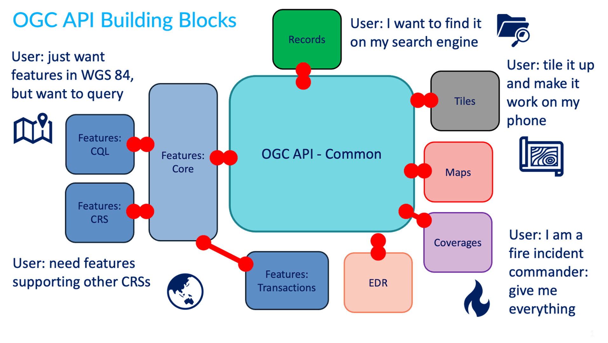
Pode ler mais sobre este tópico no website dos blocos de construção.
Mais OGC APIs
O esforço da OGC API está a evoluir rapidamente. Várias normas OGC API estão em desenvolvimento e serão implementadas na pygeoapi ao longo do tempo:
- Routes fornece acesso a dados de roteamento
- Styles define uma API Web que permite que servidores de mapas, clientes, bem como editores de estilo visual, giram e obtenham estilos
- 3D GeoVolumes facilita a descoberta e o acesso eficientes a conteúdo 3D em múltiplos formatos, com base numa perspetiva centrada no espaço
- Moving Features define uma API que fornece acesso a dados que representam elementos que se movem como corpos rígidos
- Joins suporta a junção de dados, de múltiplas fontes, com coleções de elementos ou diretamente com outros ficheiros de entrada
- Discrete Global Grid System permite que as aplicações organizem e acedam a dados organizados de acordo com um Discrete Global Grid System (DGGS)
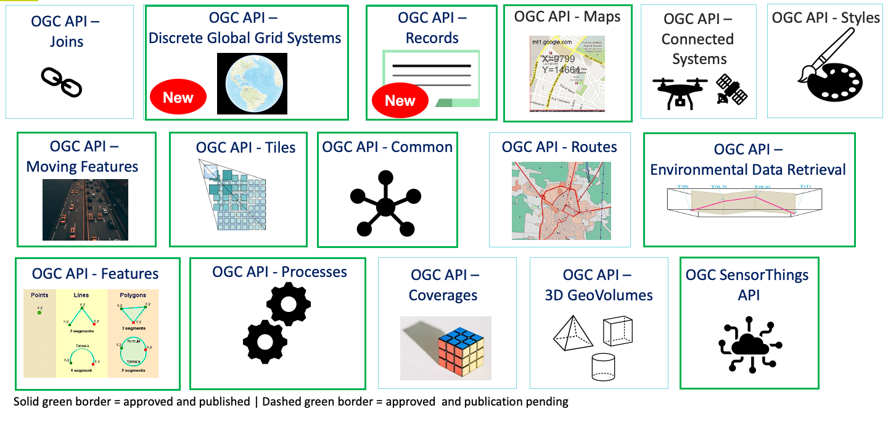
OGC APIs suportadas pela pygeoapi
A pygeoapi implementa várias normas e rascunhos de normas da OGC API. Além disso, é certificada em conformidade e até mesmo uma Implementação de Referência (RI) para algumas delas. A certificação de conformidade é importante para remover os riscos de interoperabilidade. As RI são sempre certificadas em conformidade. Do OGC Compliance Testing Program Policies & Procedures 08-134r11:
Citation
Os Produtos Candidatos que passam em todos os testes de um Pacote de Testes de Conformidade, e que a OGC reviu e certificou como tendo passado nesses testes, são considerados conformes com essa versão da Norma de Implementação.
Citation
Uma Implementação de Referência é uma cópia totalmente funcional e licenciada de um software testado e de marca que passou no teste para uma classe de conformidade associada numa versão de uma Norma de Implementação e que está disponível gratuitamente e publicamente para teste através de um serviço web ou download.
| Norma | Estado na pygeoapi | Incluída nesta workshop |
|---|---|---|
| OGC API - Features | Referência | ✅ |
| OGC API - Coverages | Em implementação | ✅ |
| OGC API - Tiles | Referência | ✅ |
| OGC API - Maps | Em implementação | ✅ |
| OGC API - Processes | Certificada | ✅ |
| OGC API - Records | Em implementação | ✅ |
| OGC API - Environmental Data Retrieval | Referência | ✅ |
| SpatioTemporal Asset Catalog | Em implementação | |
| OGC API - Routes | Planeada | |
| OGC API - Styles | Planeada | |
| OGC API - Moving Features | Planeada | |
| OGC API - DGGS | Planeada |
Na próxima secção, vamos aprofundar as APIs dedicadas relacionadas com tipos específicos de informação. Irá notar que todas as APIs são combinadas e disponibilizadas através de um único endpoint da OGC API, graças à OGC API - Common.
OpenAPI
No centro da OGC API - Common está a iniciativa OpenAPI para ajudar a descrever e documentar uma API. A OpenAPI define a sua estrutura num documento OpenAPI. A OGC API - Common sugere que este documento esteja localizado em /openapi. Com a pygeoapi num navegador, este URL abre uma página HTML interativa que facilita a consulta à API. Acrescente ?f=json para ver o documento em JSON. O documento OpenAPI indica que endpoints estão disponíveis no serviço, que parâmetros aceita e que tipos de respostas podem ser esperados. O documento OpenAPI é um conceito semelhante ao XML de Capacidades (Capabilities) como parte da primeira geração de normas OGC Web Service.
Análise da Especificação OpenAPI num navegador
Uma abordagem comum para interagir com Open APIs usando JSON é usar um programa como o Postman. Também existem plugins de navegador que permitem definir pedidos à API interativamente. Para o Firefox, descarregue o plugin poster. Para o Chrome e Edge, use o Boomerang. No Boomerang, pode criar pedidos web individuais, mas também carregar o documento de especificação da open api e interagir com qualquer um dos endpoints anunciados.
A comunidade OpenAPI fornece várias ferramentas, como um validador para documentos OAS ou para gerar código como ponto de partida para o desenvolvimento de clientes.
Normas de conteúdo e formato
O JSON é fundamental na pygeoapi, fornecendo um formato que é legível por máquina e fácil de analisar e manusear por software e ferramentas cliente. A OGC API - Common fornece formatos JSON uniformes para os vários endpoints que suporta. Normas específicas da OGC API podem especificar formatos de domínio específico (por exemplo, GeoJSON para a OGC API - Features, GeoTIFF para a OGC API - Coverages) dependendo do(s) tipo(s) de dados.
Convenções específicas da pygeoapi
A pygeoapi fornece algumas convenções que não são apresentadas pelas normas OGC API, no entanto, facilitam algumas funcionalidades e capacidades.
o parâmetro f
O parâmetro f pode ser usado com qualquer endpoint da pygeoapi para especificar um formato de saída para um determinado pedido à API. Exemplos são f=html, f=json, etc.
Usar um navegador web para aceder à OGC API
Use o seu navegador web para navegar para demo.pygeoapi.io. Um navegador, por defeito, abre qualquer OGC API em HTML (como uma página web) devido ao cabeçalho HTTP Accept enviado pelo navegador (text/html). No canto superior direito, irá notar uma ligação JSON. A ligação adiciona o parâmetro ao URL: f=json, que é um mecanismo da pygeoapi para sobrepor o cabeçalho HTTP Accept enviado pelo navegador web.
Note
Ao chamar uma OGC API a partir de javascript, e o objetivo é receber JSON, pode usar a convenção ?f=json da pygeoapi, ou a negociação de conteúdo conforme previsto pela norma; inclua um cabeçalho HTTP Accept: "application/json" no seu pedido.
Em jQuery, por exemplo, isto é representado pela propriedade dataType:
1 2 3 4 5 | |
Ou usando a API fetch nativa:
1 2 3 4 5 6 | |
o parâmetro skipGeometry
O parâmetro skipGeometry (true|false, o padrão é false) pode ser usado com o acesso a dados de elementos (features) para facilitar o download de dados vetoriais sem geometria, se desejado.
Resumo
As normas são uma pedra angular da pygeoapi e permitir-lhe-ão publicar os seus dados de forma eficiente e com uma baixa barreira para os utilizadores. Agora, vamos à ação: Publicar dados
Publicação
Publicação de Dados
Note
Certifique-se de que tem a pygeoapi configurada e que consegue executar o serviço com a configuração de defeito em http://localhost:5000.
Nesta secção, irá aprender a publicar diferentes tipos de dados geoespaciais e metadados através dos seguintes exercícios:
- Exercício 1 - O meu primeiro conjunto de dados
- Exercício 2 - Dados vetoriais via OGC API - Features
- Exercício 3 - Dados raster via OGC API - Coverages
- Exercício 4 - Mapas de dados geoespaciais via OGC API - Maps
- Exercício 5 - Mosaicos de dados geoespaciais via OGC API - Tiles
- Exercício 6 - Metadados via OGC API - Records
- Exercício 7 - Dados ambientais via OGC API - Environmental Data Retrieval
- Exercício 8 - Funções via OGC API - Processes
- Exercício 9 - pygeoapi como uma ponte para outros serviços
Exercício 1 - O primeiro conjunto de dados
Nesta secção, irá publicar um conjunto de dados vetoriais.
Para este exercício, iremos usar um conjunto de dados CSV de águas balneares na Estónia, gentilmente cedido pela Agência de Saúde da Estónia.
Pode encontrar este conjunto de dados em workshop/exercises/data/tartu/bathingwater-estonia.csv.
Este exercício consiste em ajustar o workshop/exercises/pygeoapi.config.yml para definir este conjunto de dados como uma coleção da OGC API - Features.
Verificar a configuração existente do Docker Compose
Antes de fazer quaisquer alterações, vamos garantir que a configuração inicial do Docker Compose que lhe foi fornecida está a funcionar.
Para testar:
Testar a configuração do workshop
- Numa shell de terminal, navegue para a pasta do workshop e digite:
cd workshop/exercises
docker compose up
cd workshop/exercises
docker compose up
- Abra http://localhost:5000 no seu navegador, verifique algumas coleções
- Feche digitando
CTRL-C
Note
Também pode executar o contentor Docker em segundo plano (detached) da seguinte forma:
docker compose up -d
docker ps # verifique que o container pygeoapi está em execução
# visite http://localhost:5000 no seu navegador, verifique algumas coleções
docker logs --follow pygeoapi # ver registos
docker compose down --remove-orphans
docker compose up -d
docker ps # verifique que o container pygeoapi está em execução
# visite http://localhost:5000 no seu navegador, verifique algumas coleções
docker logs --follow pygeoapi # ver registos
docker compose down --remove-orphans
Publicar o primeiro conjunto de dados
Chegou o momento de publicar o seu primeiro conjunto de dados.
Configurar o ficheiro de configuração da pygeoapi
- Abra o ficheiro
workshop/exercises/pygeoapi/pygeoapi.config.ymlno seu editor de texto - Procure a secção de configuração comentada que começa com
# START - EXERCISE 1 - Your First Collection - Descomente todas as linhas até
# END - EXERCISE 1 - Your First Collection
Certifique-se de que a indentação está alinhada (dica: diretamente abaixo de # START ...)
A secção de configuração é a seguinte:
185 186 187 188 189 190 191 192 193 194 195 196 197 198 199 200 201 202 203 204 205 206 207 208 209 210 211 | |
A parte mais relevante é a secção providers. Aqui, definimos um Provider CSV, apontando o caminho do ficheiro para o diretório /data que iremos montar (ver a seguir) do diretório local para o container de Docker. Como um CSV não é um ficheiro espacial, configuramos explicitamente a pygeoapi para que a longitude e a latitude (x e y) sejam mapeadas a partir das colunas lon e lat no ficheiro CSV. Note o parâmetro storage_crs, que indica o sistema de coordenadas que é usado nos dados de origem.
Tip
Para saber mais sobre a sintaxe e as convenções de configuração da pygeoapi, consulte o capítulo relevante na documentação.
Tip
A pygeoapi inclui inúmeros fornecedores de dados que permitem o acesso a uma variedade de formatos de dados. Através do plugin OGR/GDAL, o número de formatos suportados é quase ilimitado. Consulte a página do fornecedor de dados para saber como pode configurar uma ligação ao conjunto de dados da sua escolha. Pode sempre copiar um exemplo de configuração relevante e colocá-lo na secção de conjuntos de dados do ficheiro de configuração da pygeoapi para o seu projeto futuro.
Testar
Iniciar com a configuração atualizada
- Comece por digitar
docker compose up - Observe o output do registo (logging)
- Se não houver erros: abra http://localhost:5000
- Procure a coleção "Bathing Water Estonia"
- Navegue pelos itens da coleção
- Verifique a representação json adicionando
?f=jsonao URL (ou clicando em 'json' no canto superior direito)
Depuração de erros de configuração
Ocasionalmente, pode encontrar erros, brevemente discutidos aqui:
- Não é possível encontrar um ficheiro, um erro de digitação na configuração
- O formato ou a estrutura do ficheiro espacial não é totalmente suportado
- A porta (5000) já está a ser utilizada. Existe uma pygeoapi anterior ainda em execução? Se alterar a porta, considere que também tem de atualizar o ficheiro de configuração da pygeoapi
Existem dois parâmetros no ficheiro de configuração que ajudam a resolver estes problemas.
Defina o nível de registo (logging) para DEBUG e indique um caminho para um ficheiro de registo.
Tip
No Docker, defina o caminho do ficheiro de registo para a pasta montada, para que possa acedê-lo facilmente a partir do seu sistema anfitrião. Também pode ver os registos da consola do seu contentor Docker da seguinte forma:
docker logs --follow pygeoapi
docker logs --follow pygeoapi
Tip
Erros relacionados com caminhos de ficheiros ocorrem normalmente na configuração inicial. No entanto, também podem acontecer em momentos inesperados, resultando num serviço interrompido. Produtos como o GeoHealthCheck têm como objetivo monitorizar, detetar e notificar sobre o estado e a disponibilidade do serviço. Os testes da OGC API - Features no GeoHealthCheck verificam a disponibilidade do serviço em intervalos. Consulte a documentação do GeoHealthCheck para mais informações.
Exercício 2 - Dados vetoriais via OGC API - Features
A OGC API - Features fornece uma API Web para aceder a dados vetoriais (geometrias e os seus atributos). A especificação principal abrange o acesso e consulta básicos de dados, partes adicionais estão em desenvolvimento com as seguintes capacidades:
- OGC API - Features - Parte 1: Core fornece capacidades básicas de acesso e consulta
- OGC API - Features - Parte 2: Coordinate Reference Systems by Reference permite a importação e exportação de dados de diferentes sistemas de coordenadas
- OGC API - Features - Parte 3: Filtering adiciona a capacidade de pesquisas complexas usando a Common Query Language (CQL2)
- OGC API - Features - Parte 4: Create, Replace, Update and Delete (rascunho) adiciona capacidades transacionais
Suporte da pygeoapi
A pygeoapi suporta todas as partes da especificação OGC API - Features acima (a Parte 3 depende do suporte do backend, por examplo, Elasticsearch).
Nota
Consulte a documentação oficial para mais informações sobre os backends vetoriais suportados.
Nota
Consulte a documentação oficial para mais informações sobre o suporte a CQL.
A seguir, vamos explorar como publicar dados vetoriais usando um GeoPackage.
Publicar um GeoPackage
Na secção anterior, demonstrámos os passos envolvidos para adicionar um conjunto de dados à pygeoapi e atualizar a sua configuração. Neste exercício, vamos publicar outro ficheiro vetorial, desta vez de uma fonte de dados vetoriais GeoPackage (SQLite3).
Dica
Pode ser útil abrir o conjunto de dados no QGIS enquanto adiciona e atualiza o seu servidor da pygeoapi para avaliar facilmente os atributos da tabela, nomes, propriedades espaciais e SRC.
Vamos adicionar o ficheiro workshop/exercises/data/brazil/guama_river.gpkg.zip:
Atualizar a configuração da pygeoapi
Primeiro, vamos descompactar o ficheiro
guama_river.gpkg.zip
para guama_river.gpkg.
Depois, abra o ficheiro de configuração da pygeoapi num editor de texto.
Encontre a linha # START - EXERCISE 2 - flowlines Guama River.
Adicione uma nova secção de conjunto de dados. descomentando as linhas até # END - EXERCISE 2 -
flowlines Guama River:
1 2 3 4 5 6 7 8 9 10 11 12 13 14 15 16 17 18 19 20 21 22 23 | |
Guarde o ficheiro e reinicie o Docker Compose. Navegue para http://localhost:5000/collections para avaliar se o novo conjunto de dados com o título "Guama River" foi publicado.
Nota
O driver SQLite incidentalmente tem desafios para abrir a extensão GeoPackage no MacOS. Consulte a documentação oficial ou tente com um formato de dados alternativo. Se usar Docker, isto não é um problema.
OPCIONAL: Publicar um ficheiro GeoJSON usando Elasticsearch
Este exercício é opcional, se o tempo permitir, ou pode realizá-lo após o workshop.
Aqui exploramos a publicação de dados em OGC API - Features usando a pygeoapi com um fornecedor de backend Elasticsearch. Para isso, precisamos do repositório GitHub pygeoapi-examples:
git clone https://github.com/geopython/pygeoapi-examples.git
git clone https://github.com/geopython/pygeoapi-examples.git
Em alternativa, pode descarregar o repositório como um ficheiro .zip e descompactá-lo.
Mude para a pasta docker/elastic e execute o ficheiro docker-compose.yml:
cd docker/elastic
docker compose up
cd docker/elastic
docker compose up
Se tiver problemas a iniciar os serviços, consulte o ficheiro README. Pode precisar de adaptar a configuração de memória virtual do seu sistema.
Primeiro, vamos carregar o ficheiro greater_hyderabad_municipal_corporation_ward_Boundaries.geojson para o
servidor Elasticsearch.
Edite o script add-data.sh dentro da pasta ES, adicionando estas duas linhas antes do final:
1 2 | |
greater_hyderabad_municipal_corporation_ward_Boundaries.geojson é descarregado
para dentro do container Docker do Elasticsearch e depois carregado para o Elasticsearch.
Depois disto, precisamos de reconstruir a imagem Docker:
docker compose build
docker compose build
A seguir, precisamos de configurar a pygeoapi inserindo o excerto abaixo no ficheiro de configuração da
pygeoapi pygeoapi/docker.config.yml. Esta modificação resulta na publicação do
ficheiro greater_hyderabad_municipal_corporation_ward_boundaries.geojson como OGC API - Features usando o
fornecedor de backend Elasticsearch.
1 2 3 4 5 6 7 8 9 10 11 12 13 14 15 16 17 18 19 20 21 22 23 24 25 26 27 | |
No arranque (ex: docker compose up -d), o contentor da pygeoapi irá esperar até que os dados tenham sido ingeridos e o índice do Elasticsearch tenha sido construído. Pode verificar os registos usando:
docker compose logs --follow
docker compose logs --follow
Depois do servidor ter arrancado, pode aceder à página da coleção aqui:
http://localhost:5000/collections/hyderabad
E aos itens (features) aqui:
http://localhost:5000/collections/hyderabad/items
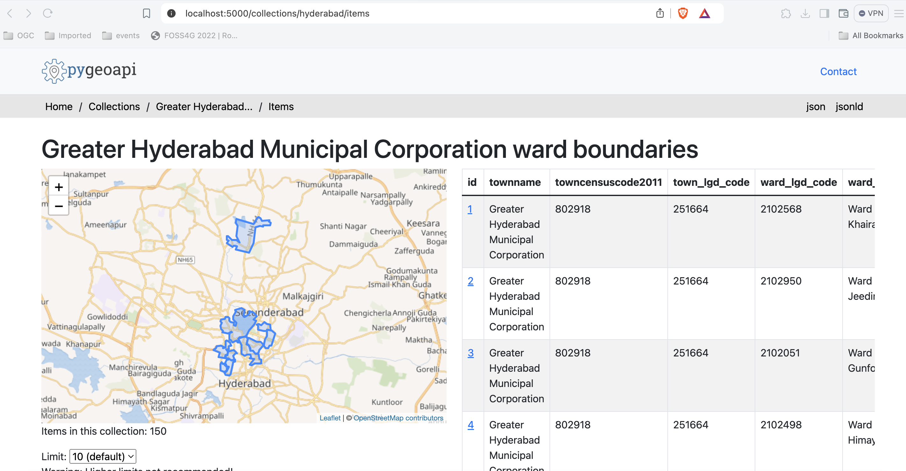
OPCIONAL: pygeoapi como um proxy WFS
A pygeoapi também pode funcionar como um serviço de frontend da OGC API - Features para um WFS OGC existente através do fornecedor GDAL/OGR. Esta função de ponte permite-lhe efetivamente publicar um WFS como OGC API - Features.
Isto é expandido numa secção avançada deste workshop: A pygeoapi como uma Ponte para outros Serviços - secção WFS.
Acesso de lado do cliente
QGIS
O QGIS Foi um dos primeiros clientes SIG de Desktop que adicionou suporte para a OGC API - Features. O suporte foi integrado no fornecedor WFS existente.
Abrir uma coleção da OGC API - Features no QGIS
Siga os passos para adicionar algumas coleções de um endpoint da OGC API - Features:
- Abra o QGIS (se não tiver o QGIS, pode usar o OSGeoLive)
- No menu Layer, selecione
Adicionar Layer>Adicionar layer WFS / layer OGC API Features - No painel
Gestor de fontes de dados, escolha 'Nova ligação'
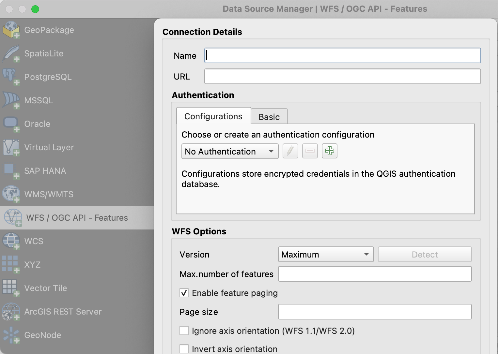
- Adicione o URL https://demo.pygeoapi.io/master (ou o endereço de um servidor local)
- Pode agora clicar no botão
detetare o QGIS irá notar que está a configurar um endpoint da OGC API - Features - O QGIS facilita a definição do tamanho da página (o pedido é dividido em vários pedidos)
- para pontos, pode facilmente defini-lo para 2500
- para alguns polígonos com alta densidade, 100 já pode ser lento
- Pressione
OKpara guardar a ligação e voltar ao ecrã anterior - Agora clique no botão
Ligarpara obter as coleções do serviço

- Pode agora adicionar coleções ao seu projeto QGIS
- Também pode construir uma pesquisa para adicionar um subconjunto da coleção
- Feche o
Gestor de fontes de dados. Note que o QGIS aplicou um estilo padrão, tal como faria se adicionasse um layer baseado em ficheiro. Pode trabalhar com a coleção de forma semelhante; identificar, aplicar estilo, filtrar, exportar, etc.
Dica
Ative o Painel de Ferramentas de Debug/Desenvolvimento (clique com o botão direito do rato em qualquer
parte dos ícones da barra de ferramentas e selecione). Ele exibirá o tráfego HTTP dentro do QGIS e é uma
ferramenta valiosa no debug de ligações falhadas.
Nota
Um número crescente de clientes GIS de Desktop adiciona suporte para as OGC APIs em lançamentos subsequentes. Por exemplo, o ArcGIS Pro suporta a OGC API - Features desde a versão 2.8.
GDAL/OGR - Avançado
O GDAL/OGR fornece suporte para a OGC API - Features.
Isto significa que pode usar o ogrinfo e o ogr2ogr para consultar e converter dados de endpoints da OGC API -
Features, tal como qualquer outra fonte de dados vetoriais. Significa também que pode estabelecer ligações a endpoints
da OGC API - Features a partir de qualquer software que tenha uma interface para o GDAL, como MapServer, GeoServer,
Manifold, FME, ArcGIS, etc.
Usar o OGR para interagir com a OGC API - Features
- Verifique se tem uma versão recente do GDAL instalada, caso contrário, use o GDAL do OSGeoLive
- Execute o
ogrinfona linha de comandos para verificar uma ligação à OGC API - Features
ogrinfo OAPIF:https://demo.pygeoapi.io/master/collections/obs
ogrinfo OAPIF:https://demo.pygeoapi.io/master/collections/obs
Verifique as informações de resumo sobre o layer com:
ogrinfo OAPIF:https://demo.pygeoapi.io/master/collections/obs obs -so
ogrinfo OAPIF:https://demo.pygeoapi.io/master/collections/obs obs -so
Agora, vamos converter as observações para uma shapefile
ogr2ogr -f "ESRI Shapefile" obs.shp OAPIF:https://demo.pygeoapi.io/master/collections/obs
ogr2ogr -f "ESRI Shapefile" obs.shp OAPIF:https://demo.pygeoapi.io/master/collections/obs
Note
Pode até usar o OGR para acrescentar novas features a uma coleção da OGC API - Features que suporte transações. Leia mais aqui sobre o suporte a transações na pygeoapi.
Usar a biblioteca GDAL a partir da linha de comandos com Docker
Se não tiver a GDAL instalada, ou quiser usar/experimentar outra versão, pode sempre executar a imagem de Docker da GDAL diretamente a partir da linha de comandos. A OSGeo fornece Imagens de Docker da GDAL. O principal a ter em conta é o mapeamento correto de volumes Docker para que as ferramentas de linha de comandos da GDAL possam aceder a ficheiros locais. Isto pode ser muito útil para conversões rápidas de dados. A maioria das imagens também vem com bindings Python da GDAL.
Primeiro, pode descarregar uma Imagem Docker muito pequena:
docker pull ghcr.io/osgeo/gdal:alpine-small-latest
docker pull ghcr.io/osgeo/gdal:alpine-small-latest
Depois pode executar, por exemplo, as ferramentas de linha de comandos do OGR. O comando base é docker
run -it --rm ghcr.io/osgeo/gdal:alpine-small-latest. Isto executa um contentor Docker interativamente (-it) e
remove-o ao sair (--rm). Abaixo estão exemplos.
Liste os formatos Vetoriais disponíveis no GDAL/OGR :
docker run -it --rm ghcr.io/osgeo/gdal:alpine-small-latest \
ogrinfo --formats
docker run -it --rm ghcr.io/osgeo/gdal:alpine-small-latest ogrinfo --formats
Obter informação sobre um ficheiro geoespacial. Note o mapeamento de volumes: -v $(pwd)/data:/work para aceder
a ficheiros locais dentro do container de Docker (os comandos estão numa única linha, quebrados para facilitar
a leitura).
cd git/workshop/exercises
docker run -v $(pwd)/data:/work -it --rm \
ghcr.io/osgeo/gdal:alpine-small-latest \
ogrinfo /work/tartu/bathingwater-estonia.geojson
INFO: Open of `/work/tartu/bathingwater-estonia.geojson'
using driver `GeoJSON' successful.
1: bathingwater-estonia (Point)
cd git/workshop/exercises
docker run -v ${pwd}/data:/work -it --rm ghcr.io/osgeo/gdal:alpine-small-latest ogrinfo /work/tartu/bathingwater-estonia.geojson
INFO: Open of `/work/tartu/bathingwater-estonia.geojson'
using driver `GeoJSON' successful.
1: bathingwater-estonia (Point)
Converter o ficheiro GeoJSON para um GeoPackage (GPKG) com ogr2ogr:
docker run -v $(pwd)/data:/work -it --rm \
ghcr.io/osgeo/gdal:alpine-small-latest \
ogr2ogr -f "GPKG" /work/tartu/bathingwater-estonia.gpkg \
/work/tartu/bathingwater-estonia.geojson
bash
docker run -v ${pwd}/data:/work -it --rm ghcr.io/osgeo/gdal:alpine-small-latest ogr2ogr -f "GPKG" /work/tartu/bathingwater-estonia.gpkg /work/tartu/bathingwater-estonia.geojson
Também pode usar o ogrinfo para obter informações sobre uma coleção da OGC API - Features. Caso esteja a aceder
a uma coleção local, terá de se certificar de que o contentor é executado na rede do anfitrião (host):
docker run \
--network=host \
ghcr.io/osgeo/gdal:alpine-small-latest \
ogrinfo OAPIF:http://localhost:5000/collections/obs obs -so
docker run --network=host ghcr.io/osgeo/gdal:alpine-small-latest ogrinfo OAPIF:http://localhost:5000/collections/obs obs -so
OWSLib - Avançado
A OWSLib é uma biblioteca de Python para interagir com Serviços Web OGC e suporta várias OGC APIs, incluindo a OGC API - Features.
Este exercício será feito usando um jupyter notebook. Se preferir, pode fazê-lo usando Python a partir da linha de comandos (ver abaixo).
Antes de continuar, certifique-se de que está na pasta workshop/exercises. Precisará disso para poder usar o
jupyter notebook.
pwd
cd
Depois use o docker para iniciar um contentor com o jupyter notebook, montando também a pasta local como um volume:
docker run -p 8888:8888 -v $(pwd):/home/jovyan/work jupyter/base-notebook
docker run -p 8888:8888 -v ${pwd}:/home/jovyan/work jupyter/base-notebook
Introduza o url indicado na linha de comandos, http://127.0.0.1:8888/lab seguido de um token. Entre na pasta work
e abra o features-owslib.ipynb.

Execute o notebook para explorar um servidor OGC API - Features, usando a owslib.
Nota
Pode executar as mesmas instruções usando o seu servidor pygeoapi local, em vez da instância de demonstração da pygeoapi.
Usar Python a partir da linha de comandos
Interagir com a OGC API - Features via OWSLib
Se não tiver o Python instalado, considere executar este exercício num contentor Docker. Veja o Capítulo de Configuração.
pip3 install owslib
pip3 install owslib
Depois, inicie uma sessão de consola Python com python3 (pare a sessão escrevendo exit()).
>>> from owslib.ogcapi.features import Features
>>> w = Features('https://demo.pygeoapi.io/master')
>>> w.url
'https://demo.pygeoapi.io/master'
>>> conformance = w.conformance()
{u'conformsTo': [u'http://www.opengis.net/spec/ogcapi-features-1/1.0/conf/core', u'http://www.opengis.net/spec/ogcapi-features-1/1.0/conf/oas30', u'http://www.opengis.net/spec/ogcapi-features-1/1.0/conf/html', u'http://www.opengis.net/spec/ogcapi-features-1/1.0/conf/geojson']}
>>> api = w.api() # OpenAPI document
>>> collections = w.collections()
>>> len(collections['collections'])
13
>>> feature_collections = w.feature_collections()
>>> len(feature_collections)
13
>>> lakes = w.collection('lakes')
>>> lakes['id']
'lakes'
>>> lakes['title']
'Large Lakes'
>>> lakes['description']
'lakes of the world, public domain'
>>> lakes_queryables = w.collection_queryables('lakes')
>>> len(lakes_queryables['properties'])
6
>>> lakes_query = w.collection_items('lakes')
>>> lakes_query['features'][0]['properties']
{u'scalerank': 0, u'name_alt': None, u'admin': None, u'featureclass': u'Lake', u'id': 0, u'name': u'Lake Baikal'}
>>> from owslib.ogcapi.features import Features
>>> w = Features('https://demo.pygeoapi.io/master')
>>> w.url
'https://demo.pygeoapi.io/master'
>>> conformance = w.conformance()
{u'conformsTo': [u'http://www.opengis.net/spec/ogcapi-features-1/1.0/conf/core', u'http://www.opengis.net/spec/ogcapi-features-1/1.0/conf/oas30', u'http://www.opengis.net/spec/ogcapi-features-1/1.0/conf/html', u'http://www.opengis.net/spec/ogcapi-features-1/1.0/conf/geojson']}
>>> api = w.api() # OpenAPI document
>>> collections = w.collections()
>>> len(collections['collections'])
13
>>> feature_collections = w.feature_collections()
>>> len(feature_collections)
13
>>> lakes = w.collection('lakes')
>>> lakes['id']
'lakes'
>>> lakes['title']
'Large Lakes'
>>> lakes['description']
'lakes of the world, public domain'
>>> lakes_queryables = w.collection_queryables('lakes')
>>> len(lakes_queryables['properties'])
6
>>> lakes_query = w.collection_items('lakes')
>>> lakes_query['features'][0]['properties']
{u'scalerank': 0, u'name_alt': None, u'admin': None, u'featureclass': u'Lake', u'id': 0, u'name': u'Lake Baikal'}
Nota
Consulte a documentação oficial da OWSLib para mais exemplos.
Resumo
Parabéns! Agora é capaz de publicar dados vetoriais com a pygeoapi.
Exercício 3 - Dados raster via OGC API - Coverages
A OGC API - Coverages fornece uma API Web para aceder a dados raster (grelhas, dados de deteção remota, cubos de dados multidimensionais):
- OGC API - Coverages (rascunho)
Suporte da pygeoapi
A pygeoapi suporta a especificação de rascunho da OGC API - Coverages, com o rasterio e o xarray como backends principais, bem como CoverageJSON e output nativo.
Note
Consulte a documentação oficial para mais informações sobre os backends raster suportados.
Publicar um conjunto de dados raster
Nos exercícios anteriores, demonstrámos os passos envolvidos na publicação de dados vetoriais e na atualização da configuração da pygeoapi. Nesta secção, vamos publicar um ficheiro raster no formato GeoTIFF, a partir de um fornecedor rasterio.
Atualizar a configuração da pygeoapi
Abra o ficheiro de configuração da pygeoapi num editor de texto. Adicione uma nova secção de conjunto de dados da seguinte forma:
1 2 3 4 5 6 7 8 9 10 11 12 13 14 15 16 17 18 19 20 21 22 23 24 25 | |
Tip
A diretiva format.name do fornecedor rasterio requer um nome de driver raster GDAL válido.
Guarde a configuração e reinicie o Docker Compose. Navegue para http://localhost:5000/collections para avaliar se o novo conjunto de dados foi publicado.
Acesso do lado do cliente
GDAL/OGR
O GDAL/OGR fornece suporte para a OGC API - Coverages. Isto significa que pode usar o gdalinfo para consultar e converter dados de endpoints da OGC API - Coverages, tal como qualquer outra fonte de dados raster. Isto também significa que pode estabelecer ligações a endpoints da OGC API - Coverages a partir de qualquer software que tenha uma interface para o GDAL, como MapServer, GeoServer, Manifold, FME, ArcGIS, etc.
Usar o GDAL para interagir com a OGC API - Coverages
- Verifique se tem uma versão recente do GDAL instalada, caso contrário, use o GDAL do OSGeoLive
- Execute
gdalinfona linha de comandos para verificar uma ligação à OGC API - Coverages:
gdalinfo OGCAPI:https://maps.ecere.com/ogcapi/collections/SRTM_ViewFinderPanorama
gdalinfo OGCAPI:https://maps.ecere.com/ogcapi/collections/SRTM_ViewFinderPanorama
OWSLib
A OWSLib é uma biblioteca Python para interagir com os Serviços Web da OGC e suporta várias OGC API, incluindo a OGC API - Coverages.
Interagir com a OGC API - Coverages via OWSLib
Se não tiver o Python instalado, considere executar este exercício num container de Docker. Consulte o Capítulo de Configuração.
bash
pip3 install owslib pip3 install owslib
Em seguida, inicie uma sessão de consola Python com: python3 (pare a sessão escrevendo exit()).
>>> from owslib.ogcapi.coverages import Coverages
>>> SERVICE_URL = 'https://demo.pygeoapi.io/master/'
>>> w = Coverages(SERVICE_URL)
>>> w.url
'https://demo.pygeoapi.io/master/'
>>> gdps = w.collection('gdps-temperature')
>>> gdps['id']
'gdps-temperature'
>>> gdps['title']
'Amostra do Sistema de Previsão Determinística Global'
>>> gdps['description']
'Amostra do Sistema de Previsão Determinística Global'
>>> schema = w.collection_schema('gdps-temperature')
>>> len(schema['field'])
1
>>> schema['properties']['1']['title']
'Temperatura [C]'
>>> schema['properties']['1']['x-ogc-unit']
'[C]'
>>> schema['properties']['1']['type']
'number'
>>> from owslib.ogcapi.coverages import Coverages
>>> SERVICE_URL = 'https://demo.pygeoapi.io/master/'
>>> w = Coverages(SERVICE_URL)
>>> w.url
'https://demo.pygeoapi.io/master/'
>>> gdps = w.collection('gdps-temperature')
>>> gdps['id']
'gdps-temperature'
>>> gdps['title']
'Amostra do Sistema de Previsão Determinística Global'
>>> gdps['description']
'Amostra do Sistema de Previsão Determinística Global'
>>> schema = w.collection_schema('gdps-temperature')
>>> len(schema['field'])
1
>>> schema['properties']['1']['title']
'Temperatura [C]'
>>> schema['properties']['1']['x-ogc-unit']
'[C]'
>>> schema['properties']['1']['type']
'number'
Note
Consulte a documentação oficial da OWSLib para mais exemplos.
Resumo
Parabéns! Agora é capaz de publicar dados raster na pygeoapi.
s--- title: Exercício 4 - Mapas de dados geoespaciais via OGC API - Maps
Exercício 4 - Mapas de dados geoespaciais via OGC API - Maps
A OGC API - Maps fornece uma API Web para aceder a quaisquer dados geoespaciais como uma imagem de mapa georreferenciada.
Suporte da pygeoapi
A pygeoapi suporta a especificação da OGC API - Maps, utilizando o MapServer MapScript e uma fachada WMS como backends principais.
Note
Consulte a documentação oficial para mais informações sobre os backends de mapa suportados.
Publicar um conjunto de dados raster
Nesta secção, iremos expor um ficheiro Geopackage disponível na localização workshop/exercises/data/airport.gpkg utilizando o MapServer MapScript. Estes dados podem ser consumidos por vários clientes que são compatíveis com a OGC API - Maps. Uma lista de alguns desses clientes pode ser encontrada aqui. Aqui também podemos passar o estilo no formato .sld, que pode ser gerado no Geoserver, QGIS, etc.
Interagir com a OGC API - Maps via MapScript
Abra o ficheiro de configuração da pygeoapi num editor de texto. Encontre a linha # START - EXERCISE 4 - Maps.
Descomente a secção relacionada com #airports.
1 2 3 4 5 6 7 8 9 10 11 12 13 14 15 16 17 18 19 20 21 22 23 24 25 26 27 28 29 30 31 | |
Note
Consulte a documentação oficial para mais informações sobre os backends de mapa suportados.
A pygeoapi como um proxy WMS
Pode consultar a secção "A pygeoapi como uma Ponte para Outros Serviços" para aprender a publicar WMS como OGC API - Maps.
Acesso do lado do cliente
QGIS
O QGIS adicionou suporte para APIs que fornecem layers de imagem renderizadas através do seu suporte raster.
Adicionar camada da OGC API - Maps ao QGIS
- Instale uma versão recente do QGIS (>3.28).
- Abra o painel
Adicionar camada raster. - Selecione
OGCAPIpara o tipo de Fonte. - Adicione o ponto de extremidade local como fonte
http://localhost:5000/collections/airports. - Selecione
PNGcomo formato de imagem. - Finalmente, adicione a camada ao mapa.
OWSLib
A OWSLib é uma biblioteca Python para interagir com os Serviços Web da OGC e suporta várias OGC APIs, incluindo a OGC API - Maps.
Interagir com a OGC API - Maps via OWSLib
Se não tiver Python instalado, considere executar este exercício num contentor Docker. Consulte o Capítulo de Configuração.
pip3 install owslib
pip3 install owslib
Para executar em Python:
>>> from owslib.ogcapi.maps import Maps
>>> m = Maps('http://localhost:5000')
>>> data = m.map('airports', width=1200, height=800, transparent=False)
>>> with open("output.png", "wb") as fh:
... fh.write(data.getbuffer())
>>> from owslib.ogcapi.maps import Maps
>>> m = Maps('http://localhost:5000')
>>> data = m.map('airports', width=1200, height=800, transparent=False)
>>> with open("output.png", "wb") as fh:
... fh.write(data.getbuffer())
Note
Consulte a documentação oficial da OWSLib para mais exemplos.
Resumo
Parabéns! Agora é capaz de servir um OGC WMS através da pygeoapi e da OGC API - Maps.
Exercício 5 - Tiles de dados geoespaciais via OGC API - Tiles
A OGC API - Tiles fornece uma API Web para disponibilizar tiles (ou mosaicos) de informação geoespacial. São suportadas diferentes formas de informação geoespacial, como tiles de elementos vetoriais ("vector tiles"), coverages, mapas (ou imagens) e, potencialmente, outros tipos de tiles de informação geoespacial. O standard está disponível neste documento:
Note
A OGC API - Tiles estende a estrutura de URL collections/* (os conjuntos de tiles são listados em /collections/example/tiles:
https://demo.pygeoapi.io/collections/lakes/tiles/WebMercatorQuad/{tileMatrix}/{tileRow}/{tileCol}?f=mvt
Suporte da pygeoapi
A pygeoapi suporta a especificação core da OGC API - Tiles e é capaz de anunciar um conjunto de tiles existente. Note que a própria pygeoapi não renderiza tiles a partir de dados de origem, mas suporta a publicação de tiles de diferentes fornecedores de backend.
Note
A estrutura de URL da OGC API - Tiles é compatível com camadas XYZ em bibliotecas comuns como OpenLayers, Leaflet e MapML.
Note
Consulte a documentação oficial para mais informações sobre os backends de tiles suportados.
Note
A pygeoapi atualmente suporta dois Tile Matrix Sets muito conhecidos: WorldCRS84Quad e WebMercatorQuad. A sua definição é publicada no ponto de extremidade /TileMatrixSets.
Publicar tiles vetoriais pré-renderizadas
Neste cenário, as tiles devem ser pré-renderizadas antes de serem servidas. O fornecedor MVT-tippecanoe permite servir tiles pré-renderizadas pelo tippecanoe, seja a partir de uma directoria no disco ou de um servidor estático (ex.: bucket S3 ou MinIO).
Para este exercício, irá publicar um conjunto de dados vetoriais dos limites dos bairros da corporação municipal da grande Hyderabad, a partir da localização abaixo:
- data:
workshop/exercises/data/hyderabad/greater_hyderabad_municipal_corporation_ward_Boundaries.geojson
Como primeiro passo vamos gerar as tiles, usando o tippecanoe:
Usar o tippecanoe para gerar tiles vetoriais
cd workshop/exercises
docker run -it --rm -v $(pwd)/data:/data emotionalcities/tippecanoe \
tippecanoe -r1 -pk -pf --output-to-directory=/data/tiles/ --force --maximum-zoom=16 \
--extend-zooms-if-still-dropping --no-tile-compression /data/hyderabad/greater_hyderabad_municipal_corporation_ward_Boundaries.geojson
cd workshop/exercises
docker run -it --rm -v ${pwd}/data:/data emotionalcities/tippecanoe tippecanoe -r1 -pk -pf --output-to-directory=/data/tiles/ --force --maximum-zoom=16 --extend-zooms-if-still-dropping --no-tile-compression /data/hyderabad/greater_hyderabad_municipal_corporation_ward_Boundaries.geojson
Note
Por favor, note que a ferramenta tippecanoe requer que o ficheiro de entrada esteja em WGS84, e produz sempre tiles em WebMercator.
Atualizar a configuração da pygeoapi
Abra a configuração da pygeoapi num editor de texto. Adicione uma nova secção de conjunto de dados da seguinte forma:
1 2 3 4 5 6 7 8 9 10 11 12 13 14 15 16 17 18 19 20 21 22 23 24 25 26 27 28 29 30 31 32 33 34 35 36 | |
Guarde o ficheiro e reinicie o Docker Compose. Navegue para http://localhost:5000/collections para avaliar se o novo conjunto de dados foi publicado.
Verificação adicional para os seguintes endpoints específicos de tiles na coleção hyderabad:
- links de tiles em http://localhost:5000/collections/hyderabad/tiles
- metadados de tiles em http://localhost:5000/collections/hyderabad/tiles/WebMercatorQuad/metadata
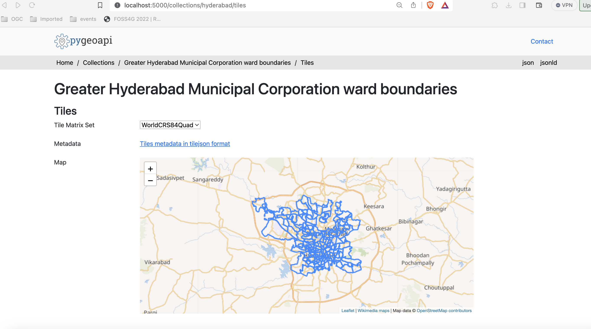
Publicar tiles vetoriais a partir do Elasticsearch
O Elasticsearch fornece um middleware que renderiza um índice dinamicamente, como tiles vetoriais. Este middleware também é suportado pelo backend mvt da pygeoapi.
Se quiser explorar a publicação de tiles vetoriais usando o Elasticsearch, clone o repositório pygeoapi-examples:
git clone https://github.com/geopython/pygeoapi-examples.git
git clone https://github.com/geopython/pygeoapi-examples.git
Depois, mude para a pasta docker/mvt-elastic:
cd docker/mvt-elastic
cd docker/mvt-elastic
Edite o script add-data.sh na pasta ES, adicionando estas duas linhas antes do fim:
1 2 | |
Acima, estamos a descarregar o greater_hyderabad_municipal_corporation_ward_Boundaries.geojson para dentro do container e a ingeri-lo num índice do Elasticsearch. Depois disto, precisamos de construir a imagem docker:
docker compose build
docker compose build
Edite a configuração docker.config.yml na pasta pygeoapi, adicionando este bloco de código antes do fim:
1 2 3 4 5 6 7 8 9 10 11 12 13 14 15 16 17 18 19 20 21 22 23 24 25 26 27 28 29 30 31 32 33 34 35 36 37 38 | |
Esta configuração permite a publicação do greater_hyderabad_municipal_corporation_ward_Boundaries.geojson como OGC API - Features e OGC API - Tiles.
Note
A API de pesquisa de tiles vetoriais do Elastic suporta níveis de zoom de 0 a 29.
Finalmente, inicie a composição docker, que irá descarregar e ingerir o conjunto de dados e publicá-lo na pygeoapi:
docker compose up
docker compose up
Note
Pode verificar o seu índice elastic em: http://localhost:9200/_cat/indices
Se estiver em produção, poderá querer fechar as portas do elastic no docker-compose.
Acesso do lado do cliente
QGIS
O QGIS suporta tiles Vetoriais da OGC API através da Camada de tiles Vetoriais. Embora a OGC API - Tiles não seja suportada nativamente, pode personalizar a ligação genérica para aceder a eles no QGIS.
Aceder a tiles Vetoriais da OGC API a partir do QGIS
Antes de entrar no QGIS, aceda à página de instalação da sua pygeoapi no navegador e siga estes passos.
- aceda à página da coleção do conjunto de dados de tiles: http://localhost:5000/collections/hyderabad
- navegue para a página de tiles clicando em
tiles: http://localhost:5000/collections/hyderabad/tiles - clique em
Tileset Metadata: http://localhost:5000/collections/hyderabad/tiles/WebMercatorQuad/metadata - Tome nota do URL template:
http://localhost:5000/collections/hyderabad/tiles/WebMercatorQuad/{tileMatrix}/{tileRow}/{tileCol}?f=mvte os valores de minZoom e maxZoom
Siga estes passos para se ligar a um serviço e aceder a tiles vetoriais:
-
localize o serviço de tiles vetoriais no painel do navegador do lado esquerdo. Note que também pode usar o menu superior e navegar para
Layer > Adicionar Layer > Adicionar Layer de Tiles Vetoriaiss -
clique com o botão direito para abrir o menu de contexto e escolha
Nova Ligação Genérica - preencha os valores necessários. Para URL, use o URL que anotou no passo anterior, substituindo
{tileMatrix}/{tileRow}/{tileCol}por{z}/{y}/{x}.
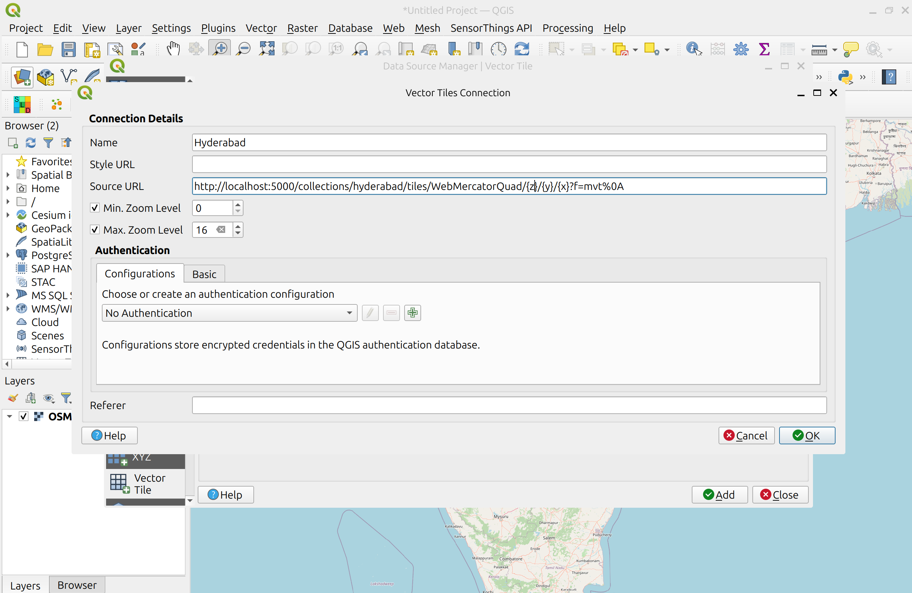
- pressione
OKpara adicionar o serviço. Neste ponto, deverá ver a ligação aparecer. Clique emAdicionarpara a adicionar ao mapa - Faça zoom para Hyderabad para visualizar o seu conjunto de dados
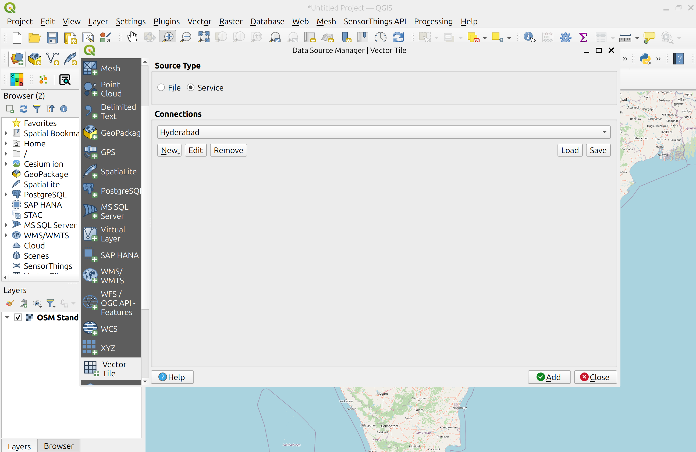
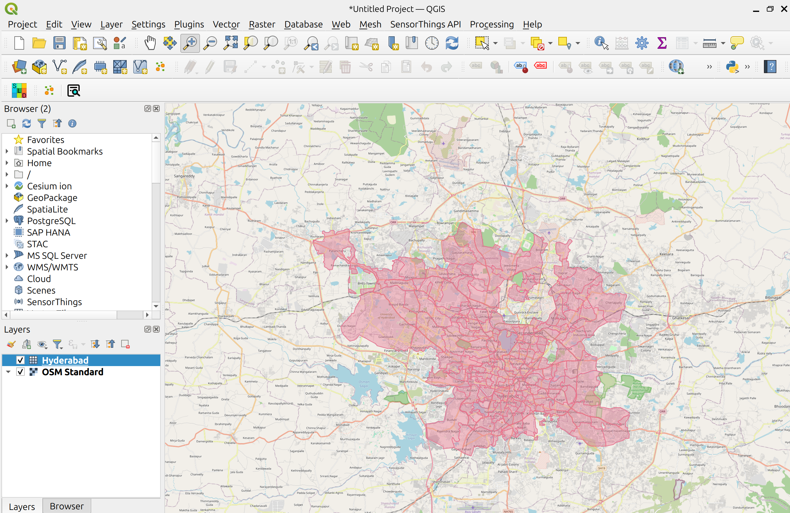
LeafletJS
O LeafletJS é uma biblioteca JavaScript popular para adicionar mapas interativos a websites. O LeafletJS não suporta explicitamente as OGC APIs, no entanto, pode interagir com a OGC API usando diretamente os resultados da API.
Adicionar OGC API - Tiles a um website com LeafletJS
- copie o HTML abaixo para um ficheiro chamado
vector-tiles.html, ou localize este ficheiro emworkshop/exercises/html - abra o ficheiro num navegador web
O código usa a biblioteca LeafletJS com o plugin leaflet.vectorgrid para exibir o serviço OGC API - Tiles de Hyderabad sobre um layer de base.
1 2 3 4 5 6 7 8 9 10 11 12 13 14 15 16 17 18 19 20 21 22 23 24 25 26 27 28 29 30 31 32 33 34 35 36 37 38 39 40 41 42 43 44 45 46 47 48 | |
Neste exemplo, as cores dos símbolos refletem o valor do atributo objectid.
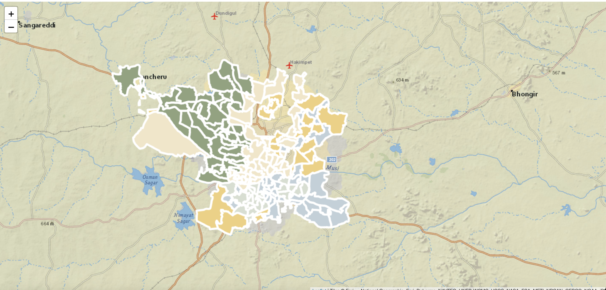
Note
Pode verificar os atributos do layer, abrindo a consola nas ferramentas de developer. 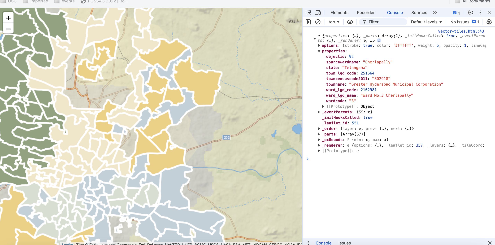
Tip
Tente adicionar um layer de tiles vetoriais da pygeoapi diferente atualizando o código em workshop/exercises/html/vector-tiles.html.
Se quiser renderizar as tiles do exemplo do Elasticsearch, pode consultar o código deste repositório aqui:
git clone -b ogcapi-ws https://github.com/emotional-cities/vtiles-example.git
git clone -b ogcapi-ws https://github.com/emotional-cities/vtiles-example.git
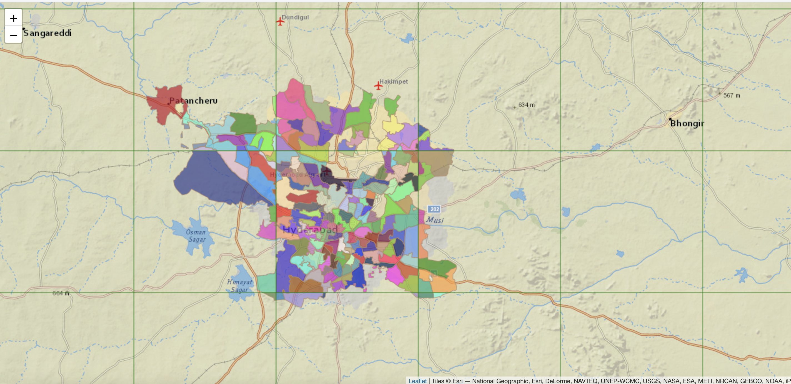
Tip
Consulte a documentação oficial da LeafletJS
OpenLayers
O OpenLayers é uma biblioteca JavaScript popular para adicionar mapas interativos a websites. O OpenLayers suporta nativamente a OGC API - Tiles (mapa e vetor). Pode verificar o código para o exemplo abaixo em: https://ogcincubator.github.io/ogcapi-tiles-demo/
Tip
Consulte a documentação oficial do OpenLayers
Resumo
Parabéns! Agora é capaz de publicar tiles na pygeoapi. Pode aprender mais sobre este Standard em: https://tiles.developer.ogc.org/
Exercício 6 - Metadados via OGC API - Records
A OGC API - Records fornece uma API de Web com a capacidade de criar, modificar, e consultar metadados na Web:
- Leia a especificação OGC API - Records: Part 1: Core no website da OGC.
A OGC API - Records utiliza a OGC API - Features como bloco de construção, permitindo assim implementação e integração simplificadas para clientes e utilizadores.
Suporte na pygeoapi
A pygeoapi suporta a especificação OGC API - Records, usando Elasticsearch e TinyDB rasterio como backends principais.
Note
Consulte a documentação oficial para mais informações sobre backends de catálogo/metadados suportados
Publicar registos de metadados na pygeoapi
Com a pygeoapi vamos configurar OGC API - Records usando qualquer fornecedor de dados suportado. Neste exercício vamos usar o backend
de catálogo TinyDB. Vamos utilizar o catálogo de exemplo em workshop/exercises/data/tartu/metadata/catalogue.tinydb.
Atualizar a configuração da pygeoapi
Abra o ficheiro de configuração da pygeoapi num editor de texto. Adicione uma nova secção de conjunto de dados da seguinte forma:
1 2 3 4 5 6 7 8 9 10 11 12 13 14 15 16 17 18 19 20 21 22 23 24 25 | |
Guarde a configuração e reinicie o Docker Compose. Navegue para http://localhost:5000/collections para avaliar se o novo conjunto de dados foi publicado.
Formatos de metadados
Por defeito, a pygeoapi suporta e espera o modelo de records e os "queryables" da OGC API - Records. Para formatos de metadados adicionais, pode desenvolver o seu próprio plugin personalizado para a pygeoapi, ou converter os seus metadados para o modelo de records da OGC API - Records antes de os adicionar à pygeoapi.
Instalar a OWSLib
Se não tiver o Python instalado, considere executar este exercício num container Docker. Consulte o Capítulo de Configuração.
pip3 install owslib
pip3 install owslib
Exemplo de loader de ISO 19139 para TinyDBCatalogue
É possível carregar mais metadados de exemplo ISO19139 numa base de dados TinyDB com o seguinte script (raw):
cd workshop/exercises/data/tartu/metadata
curl -O https://raw.githubusercontent.com/geopython/pygeoapi/master/tests/load_tinydb_records.py
python3 load_tinydb_records.py xml catalogue.tinydb
cd workshop/exercises/data/tartu/metadata
curl https://raw.githubusercontent.com/geopython/pygeoapi/master/tests/load_tinydb_records.py
python3 load_tinydb_records.py xml catalogue.tinydb
Se não tiver o curl instalado, copie o URL acima para o seu navegador web e guarde localmente.
Se não tiver o Python instalado, pode usar o loader utilizando o container Docker da OWSLib. Consulte o Capítulo de Configuração.
Usar o container Docker da OWSLib para carregar metadados
cd workshop/exercises
docker run -it --rm --network=host --name owslib -v $(pwd)/data:/data python:3.10-slim /bin/bash
pip3 install owslib
apt-get update -y && apt-get install curl -y
curl -O https://raw.githubusercontent.com/geopython/pygeoapi/master/tests/load_tinydb_records.py
python3 load_tinydb_records.py /data/tartu/metadata/xml /data/tartu/metadata/catalogue.tinydb
cd workshop/exercises
docker run -it --rm --network=host --name owslib -v ${pwd}/data:/data python:3.10-slim /bin/bash
pip3 install owslib
apt-get update -y && apt-get install curl -y
curl -O https://raw.githubusercontent.com/geopython/pygeoapi/master/tests/load_tinydb_records.py
python3 load_tinydb_records.py /data/tartu/metadata/xml /data/tartu/metadata/catalogue.tinydb
Navegue para http://localhost:5000/collections/example_catalogue para avaliar se os novos metadados foram publicados na coleção.
A pygeoapi como um proxy de CSW
Pode verificar a secção "pygeoapi como uma Ponte para Outros serviços" para aprender como publicar CSW como OGC API - Records.
Acesso de cliente
QGIS
O QGIS suporta a OGC API - Records através do plugin MetaSearch. O MetaSearch focava-se originalmente apenas em Catalogue Service for the Web (OGC:CSW), mas foi estendido para a OGC API - Records. O MetaSearch é um plugin padrão no QGIS e não requer instalação adicional.
Consultar a OGC API - Records a partir do QGIS
Siga estes passos para se conectar a um serviço e consultar conjuntos de dados:
- Localize o plugin MetaSearch no menu Web ou na Barra de Ferramentas
 . O painel de pesquisa principal aparecerá com a lista de catálogos padrão do MetaSearch já preenchida.
. O painel de pesquisa principal aparecerá com a lista de catálogos padrão do MetaSearch já preenchida.

- abra o separador
Services, para encontrar o botãoNewpara criar uma nova ligação - adicione uma ligação a
https://demo.pygeoapi.io/master - clique em
Service Infopara obter informações sobre o serviço - volte ao separador Search
- selecione a ligação que acabou de criar
- escreva um termo de pesquisa e clique em
search - repare que quando seleciona um resultado da pesquisa, uma pegada vermelha é desenhada no mapa, destacando a localização do conjunto de dados
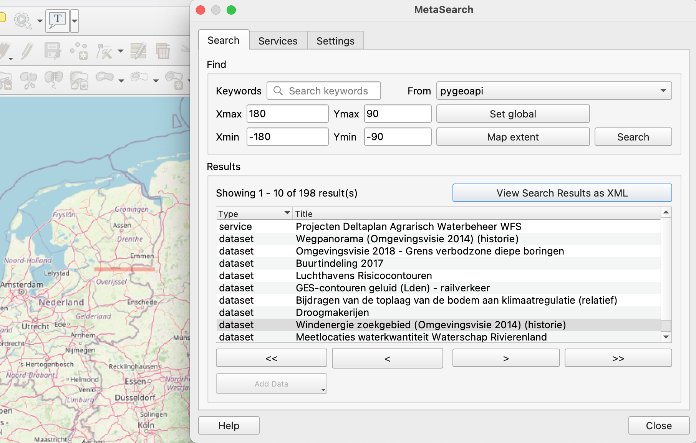
OWSLib
A OWSLib é uma biblioteca Python para interagir com OGC Web Services e suporta várias OGC APIs, incluindo a OGC API - Records.
Interagir com a OGC API - Records via OWSLib
Se não tiver o Python instalado, considere executar este exercício num contentor Docker. Consulte o Capítulo de Configuração.
pip3 install owslib
pip3 install owslib
Depois, inicie uma sessão de consola Python com python3 (pare a sessão escrevendo exit()).
>>> from owslib.ogcapi.records import Records
>>> SERVICE_URL = 'https://demo.pygeoapi.io/master/'
>>> w = Records(SERVICE_URL)
>>> w.url
'https://demo.pygeoapi.io/master'
>>> dutch_metacat = w.collection('dutch-metadata')
>>> dutch_metacat['id']
'dutch-metadata'
>>> dutch_metacat['title']
'Sample metadata records from Dutch Nationaal georegister'
>>> dutch_metacat['description']
'Sample metadata records from Dutch Nationaal georegister'
>>> dutch_metacat_query = w.collection_items('dutch-metadata', limit=1)
>>> dutch_metacat_query['numberMatched']
198
>>> dutch_metacat_query['numberReturned']
1
>>> dutch_metacat_query = w.collection_items('dutch-metadata', q='Wegpanorama')
>>> dutch_metacat_query['numberMatched']
2
>>> from owslib.ogcapi.records import Records
>>> SERVICE_URL = 'https://demo.pygeoapi.io/master/'
>>> w = Records(SERVICE_URL)
>>> w.url
'https://demo.pygeoapi.io/master'
>>> dutch_metacat = w.collection('dutch-metadata')
>>> dutch_metacat['id']
'dutch-metadata'
>>> dutch_metacat['title']
'Sample metadata records from Dutch Nationaal georegister'
>>> dutch_metacat['description']
'Sample metadata records from Dutch Nationaal georegister'
>>> dutch_metacat_query = w.collection_items('dutch-metadata', limit=1)
>>> dutch_metacat_query['numberMatched']
198
>>> dutch_metacat_query['numberReturned']
1
>>> dutch_metacat_query = w.collection_items('dutch-metadata', q='Wegpanorama')
>>> dutch_metacat_query['numberMatched']
2
Note
Consulte a documentação oficial da OWSLib para mais exemplos.
Resumo
Parabéns! Agora é capaz de publicar metadados na pygeoapi.
Exercício 7 - Dados ambientais via OGC API - Environmental Data Retrieval
OGC API - Environmental Data Retrieval fornece uma Web API para aceder a dados ambientais usando padrões de consulta bem definidos:
A OGC API - Environmental Data Retrieval utiliza a OGC API - Features como bloco de construção, permitindo assim integração simplificada para clientes e utilizadores. A EDR pode ser considerada uma API de conveniência que não requer conhecimento aprofundado sobre o armazenamento/modelo de dados subjacente.
Suporte na pygeoapi
A pygeoapi suporta a especificação OGC API - Environmental Data Retrieval aproveitando tanto plugins de fornecedor de funcionalidades como de cobertura.
Note
Consulte a documentação oficial para mais informações sobre backends EDR suportados
Publicar dados ambientais na pygeoapi
Vamos publicar alguns dados ICOADS através do plugin EDR xarray. Os dados ICOADS do exemplo podem ser encontrados em workshop/exercises/data/coads_sst.nc:
Atualizar a configuração da pygeoapi
Abra o ficheiro de configuração da pygeoapi num editor de texto. Adicione uma nova secção de conjunto de dados da seguinte forma:
1 2 3 4 5 6 7 8 9 10 11 12 13 14 15 16 17 18 19 20 21 22 23 24 25 26 27 28 | |
Guarde a configuração e reinicie o Docker Compose. Navegue para http://localhost:5000/collections para avaliar se o novo conjunto de dados foi publicado.
À primeira vista, a coleção icoads-sst aparece como uma coleção normal OGC API - Coverages. Olhe um pouco mais de perto para a descrição da coleção, e note
que há uma chave 'parameter_names' que descreve os nomes dos parâmetros EDR para as consultas da coleção.
OWSLib - Avançado
OWSLib é uma biblioteca Python para interagir com Serviços Web OGC e suporta várias OGC APIs incluindo OGC API - Environmental Data Retrieval.
Interagir com OGC API - Environmental Data Retrieval via OWSLib
Se não tem Python instalado, considere executar este exercício num contentor Docker. Consulte o Capítulo de Configuração.
pip3 install owslib
pip3 install owslib
Depois, inicie uma sessão de consola Python com python3 (pare a sessão escrevendo exit()).
>>> from owslib.ogcapi.edr import EnvironmentalDataRetrieval
>>> w = EnvironmentalDataRetrieval('https://demo.pygeoapi.io/master')
>>> w.url
'https://demo.pygeoapi.io/master'
>>> api = w.api() # documento OpenAPI
>>> collections = w.collections()
>>> len(collections['collections'])
13
>>> icoads_sst = w.collection('icoads-sst')
>>> icoads_sst['parameter_names'].keys()
dict_keys(['SST', 'AIRT', 'UWND', 'VWND'])
>>> data = w.query_data('icoads-sst', 'position', coords='POINT(174.7645 -36.8509)', parameter_names=['SST', 'AIRT'])
>>> data # dados CoverageJSON
>>> from owslib.ogcapi.edr import EnvironmentalDataRetrieval
>>> w = EnvironmentalDataRetrieval('https://demo.pygeoapi.io/master')
>>> w.url
'https://demo.pygeoapi.io/master'
>>> api = w.api() # documento OpenAPI
>>> collections = w.collections()
>>> len(collections['collections'])
13
>>> icoads_sst = w.collection('icoads-sst')
>>> icoads_sst['parameter_names'].keys()
dict_keys(['SST', 'AIRT', 'UWND', 'VWND'])
>>> data = w.query_data('icoads-sst', 'position', coords='POINT(174.7645 -36.8509)', parameter_names=['SST', 'AIRT'])
>>> data # dados CoverageJSON
Note
Consulte a documentação oficial da OWSLib para mais exemplos.
Resumo
Parabéns! Agora é capaz de publicar dados ambientais na pygeoapi.
Exercício 8 - Funções via OGC API - Processes
OGC API - Processes suporta o encapsulamento de tarefas computacionais em processos executáveis que podem ser oferecidos por um servidor através de uma Web API e ser invocados por uma aplicação cliente.
A OGC API - Processes utiliza a OGC API - Common como bloco de construção, permitindo assim implementação e integração simplificadas para clientes e utilizadores.
Suporte na pygeoapi
A pygeoapi suporta a especificação OGC API - Processes, com a capacidade de publicar código Python (independentemente de quão simples ou complexo) como uma definição de Processo OGC API. A pygeoapi também suporta processamento síncrono ou assíncrono, com a capacidade de armazenar e recuperar o estado/resultados de 'tarefas'.
Note
Consulte a documentação oficial para mais informações sobre publicação de processos na pygeoapi
Publicar código Python como um processo na pygeoapi
Com a pygeoapi vamos configurar OGC API - Processes usando código Python que implementa o BaseProcessor da pygeoapi, que é uma classe
abstrata base fundamental da pygeoapi. Neste exercício vamos implementar uma função "squared" como um processo usando o código Python de exemplo em
workshop/exercises/plugins/process/squared.py. O processo já está definido para fazer parte do ambiente e configuração da pygeoapi.
Atualizar a configuração da pygeoapi
Abra o ficheiro de configuração da pygeoapi num editor de texto. Adicione uma nova secção de processo da seguinte forma:
1 2 3 4 | |
Atualizar o código Python
Abra o código Python em workshop/exercises/plugins/process/squared.py. Encontre a função execute e atualize o código Python
para calcular o valor de entrada ao quadrado.
Guarde a configuração e reinicie o Docker Compose. Navegue para http://localhost:5000/processes para avaliar se o novo processo foi publicado. Inspecione os metadados detalhados do processo navegando para http://localhost:5000/processes/squared para inspecionar como os metadados do processo definidos no código/ficheiro Python são disponibilizados em JSON.
Acesso cliente
Swagger
A forma mais fácil de testar o novo processo é usando a interface Swagger incorporada da pygeoapi. Navegue para http://localhost:5000/openapi e experimente o processo na interface Swagger.
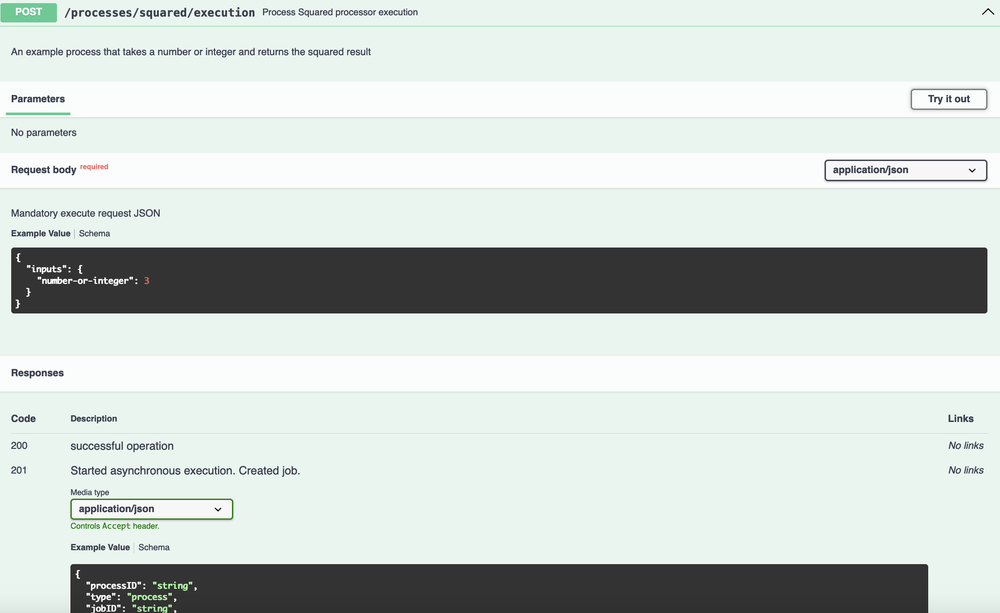
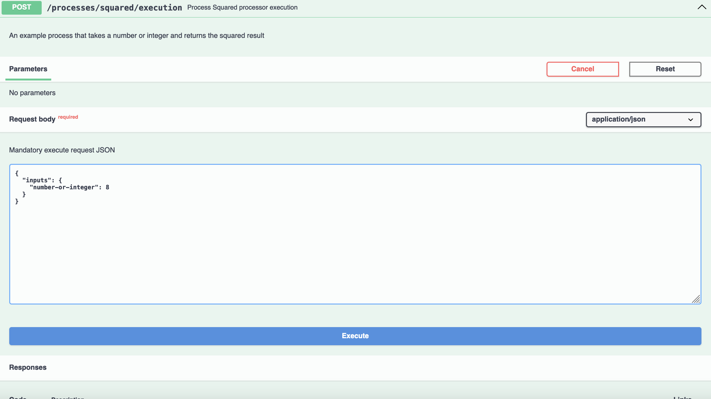

Resumo
Parabéns! Agora é capaz de publicar código Python como um processo na pygeoapi.
Tópicos avançados
Tópicos avançados
Nesta secção, discutiremos tópicos mais avançados da pygeoapi focados principalmente em estender a pygeoapi através de desenvolvimento personalizado e implementação.
Suporte multilíngue
A pygeoapi suporta multilingualismo a três níveis:
- Na configuração da pygeoapi pode fornecer títulos e resumos do serviço e coleções em múltiplas linguagens.
- Um conjunto de strings de texto traduzíveis que são traduzidas e introduzidas como parte dos formatos de saída JSON e HTML. As traduções são geridas pela framework Babel
- Nomes/valores de colunas em conjuntos de dados baseados em funcionalidades. Se um conjunto de dados contém colunas em múltiplas línguas, a pygeoapi tentará devolver respostas de dados na língua solicitada
Note
As mensagens de erro não são traduzidas, para facilitar copy-paste do erro para o stackoverflow e GitHub issues.
A negociação de língua é acionada pelo cabeçalho HTTP Accept-Language enviado pelo cliente, e pode sempre ser substituída com o parâmetro URL ?lang=fr.
Configuração multilíngue
Na configuração da pygeoapi podemos indicar as línguas suportadas pela instância. A primeira língua é a língua padrão. Para a maioria das propriedades de configuração textuais podemos fornecer uma tradução em línguas alternativas.
1 2 3 4 5 6 7 8 9 10 11 12 13 14 15 | |
Strings de texto dentro de templates HTML Jinja2
A maioria das strings de texto traduzíveis existe dentro dos templates HTML Jinja2. As strings de texto a serem traduzidas são colocadas numa tag trans, da seguinte forma:
1 | |
O Babel fornece um utilitário que extrai todas as chaves a serem traduzidas dos templates para um único ficheiro .pot.
pybabel extract -F babel-mapping.ini -o locale/messages.pot ./
pybabel extract -F babel-mapping.ini -o locale/messages.pot ./
O ficheiro .pot resultante é usado para criar ou atualizar ficheiros .po existentes, que existem para cada língua, contendo as traduções atuais.
pybabel init -d locale -l it -i locale/messages.pot
pybabel init -d locale -l it -i locale/messages.pot
Os ficheiros .po são armazenados no repositório de código fonte da pygeoapi no GitHub. Pode criar um Pull Request para adicionar ou atualizar as suas linguagens favoritas. Os ficheiros .po também podem ser adicionados a software de tradução como transifex.com.
Editar um ficheiro .po
Abra um ficheiro .po da pasta locale num editor de texto. Edite alguns valores. Guarde o ficheiro e reinicie o serviço. Verifique se o conteúdo atualizado está disponível. Também pode tentar adicionar uma nova chave a um template e traduzi-la através do mecanismo .po.
Anotar a língua das colunas de dados
A pygeoapi inclui um mecanismo para influenciar as respostas da API baseado na língua solicitada. Se o nosso serviço opera com requisitos multilíngues, pode fazer sentido adicionar colunas textuais em múltiplas línguas. Por exemplo, na configuração da pygeoapi podemos então indicar qual coluna deve ser usada como o campo título, para qual língua.
Publicar um conjunto de dados multilíngue
Para este workshop, preparámos um conjunto de dados multilíngue de hotspots de wifi gratuitos em Florença (workshop/exercises/data/free-wifi-florence.csv). Vamos adicionar o conjunto de dados à configuração da pygeoapi usando o provedor CSV. Vamos adicionar uma configuração title-field com para cada coluna traduzida a língua relevante.
1 2 3 4 5 6 | |
Vamos testar a configuração navegando para a página de itens da coleção e mudando a língua anexando ?lang=it, ?lang=de ao URL.
Resumo
Parabéns! Personalizámos a pygeoapi para suportar múltiplas línguas.
Suporte CRS
A partir da versão 0.15.0, a pygeoapi suporta totalmente OGC API - Features - Part 2: Coordinate Reference Systems by Reference.
Isto permite a importação e exportação de quaisquer dados de acordo com projeções dedicadas.
Uma "projeção" é especificada com um identificador de Sistema de Referência de Coordenadas (CRS). Estes estão em formatos URI
como http://www.opengis.net/def/crs/OGC/1.3/CRS84 (basicamente WGS84 em ordem de eixo longitude, latitude)
ou o formato "OpenGIS" como http://www.opengis.net/def/crs/EPSG/0/4258. Note que o formato "EPSG:" como EPSG:4326
está fora do âmbito da norma OGC.
Em particular, o suporte CRS permite o seguinte:
- especificar o CRS no qual os dados são armazenados, na pygeoapi a opção de configuração
storageCRS - especificar a lista de CRSs nos quais os dados de Funcionalidades podem ser recuperados, na pygeoapi a opção de configuração
crs - publicar estes CRSs nos metadados da coleção
- o parâmetro de consulta
crs=para uma coleção ou item de coleção - o parâmetro de consulta
bbox-crs=para indicar que o parâmetrobbox=está codificado nesse CRS - o cabeçalho de resposta HTTP
Content-Crsdenota o CRS da(s) Funcionalidade(s) nos dados devolvidos
Então, embora o GeoJSON exija WGS84 em ordem longitude, latitude, o cliente e servidor podem ainda assim concordar com outros CRSs.
Por baixo, a pygeoapi usa o bem conhecido wrapper Python pyproj para a biblioteca PROJ.
Leia mais na documentação da pygeoapi no Capítulo CRS.
Exercício
Adicionar suporte CRS às coleções pygeoapi para o tipo provider feature é tão simples como
por exemplo estender a configuração do Exercício 2 com este fragmento:
crs:
- http://www.opengis.net/def/crs/OGC/1.3/CRS84
- http://www.opengis.net/def/crs/EPSG/0/4258
- http://www.opengis.net/def/crs/EPSG/0/3857
- http://www.opengis.net/def/crs/EPSG/0/4326
storage_crs: http://www.opengis.net/def/crs/OGC/1.3/CRS84
Ordem
A ordem dos eixos (são coordenadas em ordem longitude, latitude ou latitude, longitude?) nas projeções é frequentemente uma fonte de confusão.
No entanto, o formato URI é bastante claro sobre isto, pelo menos mais do que o formato EPSG:.
Então http://www.opengis.net/def/crs/OGC/1.3/CRS84 é ordem longitude, latitude, enquanto
http://www.opengis.net/def/crs/EPSG/0/4326 é ordem latitude, longitude.
Na configuração abaixo, indicamos basicamente que os dados são armazenados em WGS84 (ordem de eixo longitude, latitude) e podem ser recuperados
em CRSs como http://www.opengis.net/def/crs/EPSG/0/4258 (ETRS89 ordem de eixo latitude, longitude) etc.
Adicionar CRS a uma configuração pygeoapi
Abra o ficheiro de configuração da pygeoapi num editor de texto.
Encontre a linha # START - EXERCISE 2 - firenze-terrain
Atualize a secção do conjunto de dados com suporte CRS substituindo-a pelo fragmento abaixo:
1 2 3 4 5 6 7 8 9 10 11 12 13 14 15 16 17 18 19 20 21 22 23 24 25 26 27 28 29 | |
Agora vamos inspecionar os metadados da coleção e recuperar Funcionalidades em vários CRSs. Podemos até fazer isto na interface Swagger, mas usar o navegador é bastante rápido e claro.
Metadados
Metadados da Coleção
Abra o URL: http://localhost:5000/collections/firenze-terrains-vec Os seus CRSs configurados são exibidos na parte inferior da página: "Reference Systems" e "Storage CRS".
Veja estes em formato JSON, também na parte inferior: http://localhost:5000/collections/firenze-terrains-vec?f=json
.
.
"crs":[
"http://www.opengis.net/def/crs/OGC/1.3/CRS84",
"http://www.opengis.net/def/crs/EPSG/0/4258",
"http://www.opengis.net/def/crs/EPSG/0/3857",
"http://www.opengis.net/def/crs/EPSG/0/4326"
],
"storageCRS":"http://www.opengis.net/def/crs/OGC/1.3/CRS84"
}
Reprojetar Funcionalidades
Usar o parâmetro de consulta CRS
Este é ETRS89, semelhante a WGS84, mas para o Continente Europeu (Datum) e em ordem lat,lon. Este é por exemplo usado no INSPIRE.
Veja estes em formato JSON, também na parte inferior:
"type":"FeatureCollection",
"features":[
{
"type":"Feature",
"geometry":{
"type":"MultiPolygon",
"coordinates":[
[
[
[
43.77805936835436,
11.23486287997071
],
[
43.77809089595012,
11.2348943159564
],
[
43.77810038978989,
11.23491359066035
],
[
43.77705757917591,
11.2368990806804
],
.
.
"crs":[
"http://www.opengis.net/def/crs/OGC/1.3/CRS84",
"http://www.opengis.net/def/crs/EPSG/0/4258",
"http://www.opengis.net/def/crs/EPSG/0/3857",
"http://www.opengis.net/def/crs/EPSG/0/4326"
],
"storageCRS":"http://www.opengis.net/def/crs/OGC/1.3/CRS84"
}
Se abrir a consola de desenvolvimento do navegador, pode observar o cabeçalho de resposta HTTP:
Content-Crs: <http://www.opengis.net/def/crs/EPSG/0/4258>
(O URI CRS está sempre entre < >)
Personalização de UI e templating
A pygeoapi adotou o mecanismo de templating Jinja2 para estilizar a saída HTML. Cada elemento visualizado na saída HTML é
personalizável substituindo o template relevante. Os templates estão localizados na pasta pygeoapi/templates.
É possível substituir qualquer template copiando-o para uma pasta separada e ajustá-lo às suas necessidades. Na configuração da pygeoapi
pode então indicar o caminho para a pasta de substituição. Note que para ficheiros que não são colocados
na pasta de substituição, o ficheiro original é usado.
Caution
Para qualquer personalização, tenha em mente que com uma nova versão da pygeoapi as alterações nos templates padrão não estão automaticamente disponíveis nos ficheiros substituídos. As atualizações precisam de ser cuidadosamente testadas e validadas.
Jinja2
Jinja2 é um conceito de templating comum na comunidade Python. Com um conhecimento mínimo
de HTML será capaz de fazer personalizações menores mas significativas. No núcleo da configuração de template da pygeoapi está o
template _base.html, que define o
cabeçalho e rodapé da página. O fragmento abaixo define o rodapé da página, note os parâmetros em chavetas,
que são substituídos por conteúdo dinâmico.
1 2 3 4 5 6 | |
Personalizar uma página HTML
Copie _base.html para uma pasta separada. Ajuste alguns elementos nessa página (por exemplo, imagem do logótipo). Depois, inclua uma referência à nova pasta na
configuração da pygeoapi. Reinicie o serviço. Verifique o resultado.
Personalizações CSS
A partir do template HTML personalizado pode referenciar um novo ficheiro de folha de estilo com personalizações ou adicionar diretamente as suas personalizações ao /static/css/default.css.
Resumo
Parabéns! Adicionou um aspeto e comportamento personalizados à sua implementação pygeoapi.
Usar a pygeoapi em aplicações downstream
Embora a pygeoapi seja tipicamente executada como uma aplicação autónoma, também foi projetada para permitir uso direto através de aplicações Python externas em vários padrões de design diferentes a múltiplos níveis. Da documentação oficial, o diagrama abaixo fornece uma visão geral de como a pygeoapi é projetada e arquitetada:

Há duas formas principais de criar uma aplicação downstream:
- Usar a API principal
- Estender através da interface web das frameworks suportadas out-of-the box
Usar a API principal diretamente
O ponto de entrada da API Python principal da pygeoapi é pygeoapi.api.API, que é inicializada com a configuração da pygeoapi
como um dict Python.
Note
A API principal da pygeoapi permite ao programador gerir a configuração da pygeoapi de várias formas (ficheiro em disco, armazenamento de objetos, baseado em base de dados, etc.)
A partir daqui, os objetos API fornecem várias funções, a maioria das quais requer um objeto pygeoapi.api.APIRequest
de acordo com a framework web. Exemplos incluem:
Note
Consulte a documentação oficial
para mais informações sobre pygeoapi.api.APIRequest (pode até usar o seu próprio objeto de pedido personalizado desde que
satisfaça os requisitos de interface de pygeoapi.api.APIRequest.
Vamos ver como seria uma integração API básica, usando Flask como exemplo:
from flask import Flask, make_response, request
from pygeoapi.api import API
from pygeoapi.util import yaml_load
my_flask_app = Flask(__name__)
with open('my-pygeoapi-config.yml') as fh:
my_pygeoapi_config = yaml_load(fh)
my_pygeoapi_api = API(my_pygeoapi_config)
@my_flask_app.route('/my-landing-page-route')
def my_def():
headers, status, content = my_pygeoapi_api.landing_page(request)
response = make_response(content, status)
if headers:
response.headers = headers
return response
Note
Consulte a documentação oficial para mais informações sobre a API Python principal
Estender através de uma framework web
A pygeoapi pode ser instalada e usada ao nível do roteamento web como uma dependência no seu projeto. Esta é praticamente a forma mais fácil de aproveitar a flexibilidade e a modularidade da sua arquitetura. Uma vez que as interfaces estejam disponíveis, então o programador pode usar a framework preferida para servir a aplicação frontend. Na prática os seguintes módulos:
pygeoapi.flask_app.pypara blueprints Flaskpygeoapi.starlette_app.pypara Starlette/FastAPIpygeoapi.django_app.pypara Django (PR em curso PR)
Alguns exemplos estão disponíveis abaixo para programadores.
Exemplos
Blueprints Flask
from flask import Flask
from pygeoapi.flask_app import BLUEPRINT as pygeoapi_blueprint
my_flask_app = Flask(__name__, static_url_path='/static')
my_flask_app.url_map.strict_slashes = False
# montar todos os endpoints da pygeoapi em /oapi
my_flask_app.register_blueprint(pygeoapi_blueprint, url_prefix='/oapi')
@my_flask_app.route('/')
def home():
return '<p>home page</p>'
Starlette e FastAPI
import uvicorn
from fastapi import FastAPI
from fastapi.exceptions import RequestValidationError
from starlette.exceptions import HTTPException as StarletteHTTPException
from starlette.middleware.cors import CORSMiddleware
from pygeoapi.starlette_app import app as pygeoapi_app
def create_app() -> FastAPI:
"""Gerir criação da aplicação."""
app = FastAPI(title="my_pygeoapi", root_path="", debug=True)
# Definir todas as origens CORS habilitadas
app.add_middleware(
CORSMiddleware,
allow_origins=["*"],
allow_credentials=True,
allow_methods=["*"],
allow_headers=["*"],
)
@app.exception_handler(StarletteHTTPException)
async def custom_http_exception_handler(request, e):
return await http_exception_handler(request, e)
@app.exception_handler(RequestValidationError)
async def custom_validation_exception_handler(request, e):
return await request_validation_exception_handler(request, e)
# montar todos os endpoints da pygeoapi em /oapi
app.mount(path="/oapi", app=pygeoapi_app)
return app
app = create_app()
if __name__ == "__main__":
uvicorn.run(app, port=5000)
Otimização para Motores de Busca (SEO)
A OGC API - Features adotou a Boa Prática 2 de Dados Espaciais na Web: Tornar os seus dados espaciais indexáveis por motores de busca com a recomendação de incluir HTML como formato de saída de qualquer OGC API. Isto significa que os utilizadores podem navegar numa OGC API a partir do seu navegador e os Motores de Busca conseguem rastrear o conteúdo.
Um aspeto a considerar é que, uma vez que a API se torna uma página web, as práticas comuns para arquitetura web e desenvolvimento tornam-se relevantes:
- o website tem uma navegação clara?
- está incluído um logótipo da empresa, marca, declaração de privacidade, aviso de cookies?
- a página web é WCAG acessível?
Tip
Note que a configuração da pygeoapi também tem uma opção para desativar a saída HTML. Nesse cenário, apenas a saída JSON está disponível.
Na Web, os websites são tipicamente visitados por web crawlers de motores de busca populares. Os crawlers são processos automatizados que ajudam a construir o índice do motor de busca. Os crawlers seguem ligações na Web para identificar conteúdo novo ou atualizado . A ligação cruzada da sua API a outros recursos aumenta portanto a visibilidade (e classificação) da sua API.
O British Geo6 escreveu uma extensa boa prática sobre SEO para editores de dados que oferece uma boa visão geral do SEO no âmbito das publicações de dados.
Ajustar o comportamento dos Web Crawlers
Este parágrafo apresenta alguns mecanismos que facilitam ou bloqueiam web crawlers de indexar o seu conteúdo.
Se não está interessado em ter o seu conteúdo indexado por motores de busca, pode fornecer um ficheiro robots.txt na raiz do seu website, especificando que pastas não devem ser indexadas. Mais drasticamente é a opção de bloquear o acesso para crawlers ou bots ao seu conteúdo filtrando tráfego para o website baseado no cabeçalho HTTP User-Agent. Tal regra pode ser adicionada a uma configuração de firewall ou servidor web.
Um ficheiro robots.txt também pode incluir uma ligação para um Sitemap. Muitos motores de busca fornecem a opção de submeter um sitemap
para acelerar o rastreamento e indexação. A pygeoapi não fornece um sitemap do seu conteúdo, mas pode criar o seu próprio sitemap (publicar como /sitemap.xml),
especificando URLs do seu conteúdo desejado para ser indexado.
Os motores de busca fornecem ferramentas para avaliar o comportamento de pesquisa do seu website. Estas ferramentas podem fornecer informações valiosas sobre a capacidade de encontrar o seu website e conteúdo (por exemplo, palavras-chave usadas para localizar o seu website).
Schema.org/Dataset
Os motores de busca cooperam na iniciativa Schema.org. O Schema.org permite-lhe anotar o seu website usando o vocabulário schema.org,
para que os motores de busca indexem o conteúdo de forma estruturada. O Google foi o primeiro a empregar estas anotações para fornecer um motor de busca dedicado para conjuntos de dados. A pygeoapi adiciona anotações schema.org/Dataset às páginas de coleção, para que as coleções sejam automaticamente incluídas na pesquisa de conjuntos de dados do Google.
Avaliar as anotações schema.org em coleções
O Google fornece uma ferramenta para avaliar anotações Schema.org em websites. Tente avaliar um endpoint de coleção da pygeoapi
na ferramenta. Se executar a pygeoapi localmente (não acessível ao google), pode copiar o código fonte de uma página como HTML no separador <code>, caso contrário pode colar o URL da página no separador URL.
Note
Uma ferramenta semelhante é disponibilizada pelo Yandex (note que é necessário registo).
Segurança e controlo de acessos
Visão geral
A segurança em geral é um tópico amplo e complexo, afetando todo o ciclo de vida de desenvolvimento. É recomendado seguir as melhores práticas de segurança durante todas as fases de desenvolvimento como design, codificação e implementação. Nesta workshop focaremos apenas na segurança de API e controlo de acessos, em vez da gama completa de tópicos de segurança de aplicações.
Segurança de API
A segurança de API é todo o processo para proteger APIs de ataques. É parte das diretrizes de segurança mais gerais que são tratadas no documento OWASP Top Ten. Portanto, essas recomendações ainda se aplicam.
Segurança de Aplicações
O documento Top Ten do Open Web Application Security Project (OWASP) é uma ferramenta muito boa para garantir o mínimo contra os riscos de segurança e gerir ameaças críticas que mais provavelmente afetam o seu código.
Controlo de acessos
O controlo de acessos é outra parte fundamental do Open Web Application Security Project e aborda a Gestão de Identidade e Acesso (IAM) de uma API. A IAM consiste em duas partes diferentes de um fluxo de segurança:
- Autenticação (AuthN) verifica a identidade do utilizador para permitir ou negar acesso subsequente (ver próximo)
- Autorização (AuthZ) valida permissões de um utilizador (identidade) para aceder a um recurso. As permissões dessa identidade são verificadas contra as políticas de um recurso para (des)permitir acesso a, por exemplo, (partes de) uma API.
Estas partes são geralmente geridas por infraestruturas e soluções dedicadas que geralmente fornecem a maioria dos requisitos de segurança out-of-the-box.
Especificação de Segurança OpenAPI
A especificação OpenAPI tem elementos muito bem definidos para programadores e adotantes. Os mais relevantes são:
- Security Scheme Object define os esquemas de segurança que podem ser usados pelas operações. Os esquemas suportados são Autenticação HTTP, uma Chave API, fluxos OAuth2 e OpenID Connect.
- Security Requirement Object define a lista de esquemas de segurança necessários para executar uma operação.
Considerações da pygeoapi
A pygeoapi ainda não suporta elementos de segurança OpenAPI. A implementação futura poderia incluir geração do documento OpenAPI da pygeoapi com uma configuração de segurança, ou gerar a partir de uma aplicação/solução de controlo de acessos conhecida (como fastgeoapi ou pygeoapi-auth).
A implementação direta de controlo de acessos não está no âmbito da pygeoapi. A abordagem desejada aqui seria aproveitar uma solução existente e definir/integrar os endpoints seguros de acordo. Por exemplo, fastgeoapi ou pygeoapi-auth poderiam ser implementados downstream da pygeoapi, e governar o acesso a endpoints específicos (coleções, itens, etc.).
Note
A documentação oficial da pygeoapi fornece o estado oficial do projeto sobre atualizações de implementação de segurança, e deve ser visitada para se manter atualizado com o estado mais recente da implementação de segurança no projeto.
Web Semântica e Linked Data
Esta secção aborda 3 aspetos da Web Semântica:
Motores de busca
Os motores de busca usam tecnologia semelhante à Web Semântica para facilitar a captura de dados estruturados (também conhecidos como rich snippets) de páginas web.
A pygeoapi suporta este caso de uso através da incorporação de um snippet JSON-LD schema.org na codificação HTML,
Tip
A ontologia schema.org não é uma ontologia formal da Web Semântica, estando portanto um pouco desconectada do resto da Web Semântica
Tip
Consulte mais informações em Otimização para Motores de Busca
Publicar dados espaciais na Web Semântica
A OGC API - Common adotou várias convenções W3C, que aproximam as OGC APIs das normas da Web Semântica, comparado com as normas de primeira geração dos Serviços Web OGC (OWS).
Atualmente, a pygeoapi não pretende ser uma implementação completa da Web Semântica, no entanto é possível anunciar alguns aspetos da Web Semântica para que os dados possam ser percorridos por clientes conscientes da Web Semântica.
Usar um cliente SPARQL para consultar a pygeoapi
SPARQL é comummente conhecido como a linguagem de consulta para consultar triple stores. No entanto, também pode usar SPARQL para consultar grafos de recursos web ligados. O cliente SPARQL percorre ligações entre os recursos para localizar os triples solicitados. Jena ARQ é um cliente SPARQL de linha de comandos que consegue executar tais consultas. O Jena é bastante difícil de configurar, embora haja uma imagem Docker disponível. Como alternativa, usaremos uma implementação web do motor ARQ. Navegue para https://demos.isl.ics.forth.gr/sparql-ld-endpoint e substitua a consulta na caixa de texto por:
1 2 3 4 5 6 7 | |
Uma consulta a um item retorna o item com a sua geometria:
1 2 3 4 5 | |
Note que o cliente SPARQL falha se codificar diretamente o formato HTML.
1 2 3 4 5 | |
O JSON-LD conforme esperado pelos motores de busca tem alguns desafios para as ferramentas da web semântica. Então como funciona se o formato não for codificado diretamente?
O motor SPARQL negocia com o endpoint para avaliar que codificações (RDF) estão disponíveis, e baseado na negociação de conteúdo
solicita a codificação JSON_LD via f=jsonld.
A pygeoapi adotou convenções da comunidade JSON-LD para anotar JSON como RDF. Para funcionalidades, cada propriedade (coluna numa tabela fonte) é anotada por um conceito semântico. A configuração relacionada para aplicar as anotações é gerida no elemento de contexto de uma definição de recurso
Tip
Leia mais na documentação da pygeoapi.
1 2 3 4 5 6 7 8 9 | |
Proxy para a Web Semântica
Os engenheiros de dados espaciais são geralmente desafiados quando importam e visualizam fragmentos da web semântica. O número de clientes espaciais que atualmente suportam interação SPARQL é limitado e requer conhecimento especializado para usar. Um grupo dentro da comunidade da pygeoapi pretende facilitar o acesso à web semântica para engenheiros de dados espaciais introduzindo a pygeoapi como uma proxy entre os clientes GIS típicos e a web semântica.
Uma nova funcionalidade está a ser preparada que introduz um fornecedor SPARQL na pygeoapi. O fornecedor permite navegar pelos resultados de uma consulta SPARQL como uma coleção OGC API - Features.
Resumo
Parabéns! Agora pode configurar configurações da pygeoapi com conceitos de linked data.
Implementação na cloud
A implementação em infraestruturas cloud e conceitos como Microsserviços e Twelve-Factor apresentam requisitos específicos para como o software é projetado e implementado. A pygeoapi suporta estes conceitos, tendo uma pegada baixa em CPU e memória, e não persiste estado do utilizador, sendo portanto capaz de escalar sem riscos.
pygeoapi e Docker
Uma imagem Docker está disponível para a pygeoapi. Pode executar a imagem localmente como:
docker run -p 5000:80 geopython/pygeoapi:latest
docker run -p 5000:80 geopython/pygeoapi:latest
Rever o Dockerfile da pygeoapi
Note no Dockerfile da pygeoapi como o ficheiro open api é gerado como parte do script de arranque do Docker.
Numa configuração típica, substituir-se-ia o ficheiro de configuração padrão da pygeoapi na imagem por um personalizado e incluir a pasta de dados:
usar configuração personalizada
docker run -p 5000:80 \
-v $(pwd)/pygeoapi-config.yml:/pygeoapi/local.config.yml \
-v $(pwd)/geodata:/geodata https://hub.docker.com/r/geopython/pygeoapi:latest
docker run -p 5000:80 -v ${pwd}/pygeoapi-config.yml:/pygeoapi/local.config.yml -v ${pwd}/geodata:/geodata https://hub.docker.com/r/geopython/pygeoapi:latest
Alternativamente, pode construir uma nova imagem Docker incluindo tanto a configuração como os dados para o serviço.
FROM geopython/pygeoapi:latest
COPY ./my.config.yml /pygeoapi/local.config.yml
Pode ter notado que o ficheiro de configuração da pygeoapi inclui uma referência ao endpoint no qual a pygeoapi é publicada. Esta configuração deve corresponder ao endpoint público do serviço (domínio, caminho e porta).
Por defeito, a imagem Docker da pygeoapi executará a partir do caminho raiz /. Se precisar de executar a partir de um sub-caminho e ter todos os URLs internos corretos pode
definir a variável de ambiente SCRIPT_NAME.
docker run -p 5000:80 -e SCRIPT_NAME='/mypygeoapi' \
-v $(pwd)/my.config.yml:/pygeoapi/local.config.yml -it geopython/pygeoapi
# navegue para http://localhost:5000/mypygeoapi
docker run -p 5000:80 -e SCRIPT_NAME='/mypygeoapi' -v ${pwd}/my.config.yml:/pygeoapi/local.config.yml -it geopython/pygeoapi
# navegue para http://localhost:5000/mypygeoapi
Resumo
Parabéns! Agora pode implementar a pygeoapi como um serviço cloud native.
Suporte INSPIRE
INSPIRE é uma diretiva europeia sobre partilha de dados no domínio ambiental. Os estados membros da UE investiram quase 20 anos de esforço para harmonizar dados no domínio ambiental e publicá-los usando normas OGC. A diretiva está no final do seu tempo de vida, mas a expectativa é que as convenções da diretiva INSPIRE sejam adotadas por diretivas futuras, como as diretivas do pacto verde e dados abertos.
Nos últimos 20 anos, o panorama das TI mudou consideravelmente. O INSPIRE acompanhou estes desenvolvimentos adotando uma série de Boas Práticas que substituem as Diretrizes Técnicas originais.
Algumas das boas práticas recentes e futuras focam-se nos desenvolvimentos no domínio OGC API. Uma boa prática já foi adotada sobre fornecer serviços de descarregamento usando OGC API - Features e outras estão em preparação, como o serviço de descoberta usando OGC API - Records. Estes desenvolvimentos tornam a pygeoapi uma opção interessante para fornecer serviços INSPIRE.
Serviços INSPIRE e a sua alternativa OGC API
Os serviços INSPIRE são tipicamente categorizados em serviços de visualização, serviços de descarregamento e serviços de descoberta. Os serviços de descarregamento são ainda divididos em fontes Vetoriais, fontes de Cobertura e fontes de Sensores. A iniciativa OGC API fornece as APIs relacionadas para cada tipo de serviço. A tabela abaixo destaca para cada tipo de serviço a recomendação das Diretrizes Técnicas e as Boas Práticas relevantes.
| Tipo de serviço | TG | OGC API | Estado da boa prática |
|---|---|---|---|
| Serviço de descoberta | CSW | OGC API - Records | Em preparação |
| Serviço de visualização | WM(T)S | OGC API - Maps / OGC API - Tiles | Não agendado Em preparação |
| Serviço de descarregamento - Vetor | WFS | OGC API - Features | Adotada |
| Serviço de descarregamento - Cobertura | WCS | OGC API - Coverages / STAC 1 | Não agendado Em preparação |
| Serviço de descarregamento - Sensor | SOS | OGC API - EDR / Sensorthings API 2 | Não agendado Adotada |
Note
Ao adotar Boas Práticas, considere que a documentação e ferramentas para validação ainda são limitadas. Além disso, o Portal Geo INSPIRE pode ainda não estar pronto para recolher registos de um endpoint OGC API - Records.
Publicar documentos de metadados como um serviço de descoberta INSPIRE
Neste exercício vamos importar uma pasta de documentos de metadados para uma base de dados TinyDB e vamos configurar a base de dados como um endpoint OGC API - Records.
Descarregue o ficheiro zip 'inspire-records.zip' do repositório. Extraia o ficheiro zip. A pasta /tests contém um script
load_tinydb_records.py. O script tem 2 parâmetros:
python3 load_tinydb_records.py <path/to/xml-files> <output.db>
python3 load_tinydb_records.py <path/to/xml-files> <output.db>
Agora configure TinyDB como fornecedor para OGC API - Records. Reinicie o serviço e verifique o resultado. Verifique também a saída XML de alguns dos registos.
OGC API e os modelos de dados INSPIRE
A maioria dos modelos de dados INSPIRE tem uma estrutura hierárquica, que não é comum na comunidade OGC API orientada para GeoJSON. Em teoria é possível fornecer GML hierárquico a partir de um endpoint OGC API, mas ainda não há muitas experiências atualmente. Duas iniciativas podem trazer melhorias a este aspeto:
- a pygeoapi facilita a configuração de uma codificação JSON-LD usando uma ontologia arbitrária. A boa prática sobre web semântica fornece alguns dos modelos de dados numa ontologia RDF
- A boa prática sobre codificações alternativas sugere uma abordagem para publicar conjuntos de dados usando um modelo de dados relacional como GeoPackage, que se adequa melhor à comunidade OGC API
OGC API como um registo de listas de códigos
Um caso de uso típico no INSPIRE é a opção de estender uma lista de códigos INSPIRE para corresponder a um requisito local. Para este caso de uso, a lista de códigos estendida tem de ser publicada num registo. A OGC API - Common fornece mecanismos para publicar listas de conceitos como itens em coleções. A pygeoapi também fornece um mecanismo para anunciar os conceitos usando a ontologia SKOS através da sua codificação JSON-LD . Na coincidência de um conceito ter uma propriedade de geometria, a lista de códigos pode até ser publicada como OGC API - Features (num mapa).
Publicar uma lista de códigos via OGC API
Uma lista de códigos de tipos de solo alemã foi disponibilizada em formato CSV em workshop/exercises/data/bodenart.en.csv. Use o fornecedor CSV para publicar este conjunto de dados na pygeoapi. Que URL usaria para referenciar um conceito na lista publicada?
1 2 3 4 5 6 7 8 9 10 11 12 13 14 15 16 17 18 19 20 21 22 23 24 | |
Resumo
Parabéns! Trabalhou com a pygeoapi para conformidade INSPIRE
Administração
Visão geral
A pygeoapi fornece uma API de administração (consulte a documentação da pygeoapi para mais informações sobre como ativar, configurar e usar) em suporte à gestão da sua configuração. A API (não uma OGC API) é implementada como um serviço RESTful para ajudar a criar, atualizar, substituir ou eliminar vários elementos da configuração da pygeoapi. Uma UI simples apenas de leitura é implementada como parte da API de administração.
Interface de utilizador
Por design, a pygeoapi não fornece uma verdadeira interface de utilizador para administrar a configuração. Dado que a API de administração existe, algumas opções podem ser consideradas para desenvolver uma UI de administração:
- autónoma
- aplicação simples sem conectividade à API de administração da pygeoapi
- construída a partir do esquema de configuração da pygeoapi
- permite copiar uma configuração já existente da pygeoapi
- permite gerar configuração da pygeoapi para copiar/colar numa implementação da pygeoapi
- pode ser implementada em qualquer lugar (por exemplo, GitHub Pages)
- integrada
- aplicação conectada a uma implementação da pygeoapi
- construída a partir do esquema de configuração da pygeoapi
- lê/escreve uma configuração da pygeoapi em tempo real através da API de administração da pygeoapi (controlo de acesso)
- implementada como parte de uma aplicação Docker Compose
Note
Tem a sua própria ideia para uma UI de administração da pygeoapi? Conecte-se com a comunidade da pygeoapi para discutir a sua ideia!
Exercício 9 - pygeoapi como ponte para outros serviços
Nesta secção vamos explorar como a pygeoapi pode ser usada como um interface para re-publicar serviços web com distintas interfaces. Estas pontes podem ajudar organizações a migrar de OWS para OGC API.
Publicar WFS como OGC API - Features
Um caso de uso importante para a pygeoapi é fornecer uma interface OGC API - Features sobre endpoints Web Feature Service (WFS) ou ESRI FeatureServer existentes. Neste cenário, diminui a barreira de acesso e aumenta a usabilidade de serviços existentes para uma audiência mais ampla. Vamos configurar uma API sobre um WFS existente (correndo nos servidores da cidade de Florença).
Atualizar a configuração da pygeoapi
Abra a configuração da pygeoapi num editor de texto.
Encontre a linha # START - EXERCISE 8 - WFS Proxy.
Adicione uma nova secção de conjunto de dados descomentando as linhas até # END - EXERCISE 8 - WFS Proxy:
1 2 3 4 5 6 7 8 9 10 11 12 13 14 15 16 17 18 19 20 21 22 23 24 25 26 27 28 29 30 31 32 33 34 35 36 37 38 39 | |
Guarde o ficheiro e reinicie o Docker Compose. Navegue para http://localhost:5000/collections para avaliar se o novo conjunto de dados foi publicado.
Note estes importantes excertos de configuração sob providers:
-
Usamos o Fornecedor OGR da pygeoapi. Este é o backend mais versátil da pygeoapi para suportar numerosos formatos. Usar a biblioteca GDAL/OGR (bindings Python) permite à pygeoapi conectar-se a cerca de 80+ Formatos Vetoriais. Podíamos ter usado o Fornecedor
OGRem vez do FornecedorSQLiteGPKGacima no exercícioosm_places-vecacima. -
storage_crsdenota o CRS (Sistema de Referência de Coordenadas) no qual o conjunto de dados é armazenado (o padrão é CRS84, ou seja, 'longitude, latitude') crsé um array de CRSs que podem ser especificados para as Funcionalidades serem devolvidas (parâmetrocrs=), ou para a sua bounding box (parâmetrobbox-crs=). O padrão também é CRS84.
O suporte CRS permite efetivamente à pygeoapi reprojetar os dados do seu CRS de armazenamento (aqui EPSG:3003) de acordo com OGC API - Features - Part 2: Coordinate Reference Systems by Reference. A secção Avançada desta workshop elaborará o suporte CRS da pygeoapi.
Publicar WMS como OGC API - Maps
Podemos usar o provider/fornecedor WMSFacade da pygeoapi para publicar interfaces OGC Web Map Service (WMS) como OGC API - Maps.
Vamos configurar uma API sobre um WMS existente no Servidor de Demonstração MapServer:
https://demo.mapserver.org/cgi-bin/msautotest
Note
Sinta-se à vontade para usar um WMS à sua escolha!
Atualizar a configuração da pygeoapi
Abra a configuração da pygeoapi num editor de texto.
Encontre a linha ## START - EXERCISE 8 - WMS Proxy.
Adicione uma nova secção de conjunto de dados descomentando as linhas até ## END - EXERCISE 8 - WMS Proxy:
Certifique-se de manter a indentação YAML adequada.
1 2 3 4 5 6 7 8 9 10 11 12 13 14 15 16 17 18 19 20 21 22 23 24 25 26 | |
Execute os seguintes pedidos no seu navegador web:
- mapa padrão: http://localhost:5000/collections/wms-facade-demo/map?f=png
- largura/altura específicas: http://localhost:5000/collections/wms-facade-demo/map?f=png&width=800&height=600
- área de interesse específica (bbox do Canadá): http://localhost:5000/collections/wms-facade-demo/map?f=png&width=800&height=600&bbox=-142,42,-52,84
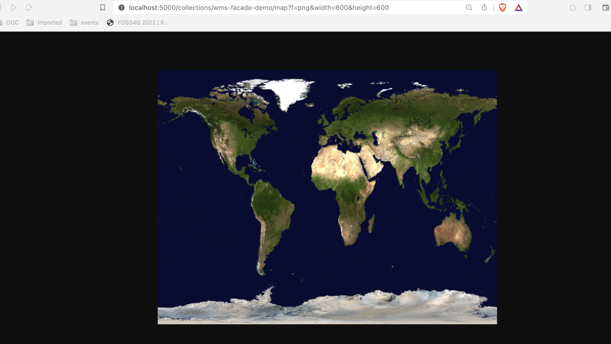
Tip
Experimente com os seus próprios valores de bbox e largura/altura!
Publicar CSW como OGC API - Records
Nesta secção veremos como publicar Catalogue Service for the Web (CSW) como OGC API - Records. Para isso, usaremos o serviço CSW pycsw OGC CITE demo.
Atualizar a configuração da pygeoapi
Abra a configuração da pygeoapi num editor de texto.
Encontre a linha # START - EXERCISE 8 - CSW Proxy.
Adicione uma nova secção de conjunto de dados descomentando as linhas até # END - EXERCISE 8 - CSW Proxy:
1 2 3 4 5 6 7 8 9 10 11 12 13 14 15 16 17 18 19 20 | |
Pode explorar a coleção de catálogo com proxy usando estes endpoints:
- página de metadados da coleção: http://localhost:5000/collections/cite_demo
- lista de registos: http://localhost:5000/collections/cite_demo/items
- registo: http://localhost:5000/collections/cite_demo/items/urn:uuid:19887a8a-f6b0-4a63-ae56-7fba0e17801f
Tip
Lembre-se de que pode usar o cliente QGIS sugerido aqui para explorar esta API.
Publicar SensorThings API como OGC API - Features
A norma OGC SensorThings API oferece interfaces RESTful para interconectar dispositivos IoT, dados, de forma aberta e unificada. Embora existam alguns clientes que suportam esta norma, há muito mais que suportam OGC API - Features.
A ponte SensorThings da pygeoapi permite fazer proxy das entidades SensorThings (por exemplo: Thing , Sensor, DataStream, ObservedProperty ) em coleções de funcionalidades.
Nesta secção veremos como Publicar um Thing da SensorThings API como uma coleção OGC API - Features, que pode então ser consumida por vários clientes, como os listados aqui
Atualizar a configuração da pygeoapi
Abra a configuração da pygeoapi num editor de texto.
Encontre a linha # START - EXERCISE 8 - SensorThings Proxy.
Adicione uma nova secção de conjunto de dados descomentando as linhas até # END - EXERCISE 8 - SensorThings Proxy:
1 2 3 4 5 6 7 8 9 10 11 12 13 14 15 | |
Conclusão
Esperamos que esta workshop vos tenha proporcionado uma visão geral das muitas funcionalidades da pygeoapi. O objetivo do projeto é permitir a publicação de dados utilizando o conjunto de Standards OGC API de forma simples, flexível e com uma barreira baixa de entrada.


FOSS4G Europe 2025
Para aqueles que estão a participar no FOSS4G Europe 2025:
- venham à apresentação sobre o estado do projeto pygeoapi na quarta-feira, 16 de julho às 17:45, na sala EL11 (Geosolutions)
- ou às outras apresentações relacionadas com pygeoapi:
- a equipa pygeoapi estará presente no Community Sprint nos dias 19-20 de julho, no local da conferência, Faculdade de Humanidades e Ciências Sociais (edifício P)
Contribuições
Sugestões, melhorias e correções são sempre bem-vindas. Por favor, visitem a nossa página da comunidade para mais informações sobre como entrar em contacto.
Obrigado pelo vosso interesse na pygeoapi!